Présentation selon Opquast V5
Présentation - Présentation selon Opquast V5
Slide 1 sur 40 - Présentation selon Opquast V5
Slide 1 - Présentation selon Opquast V5
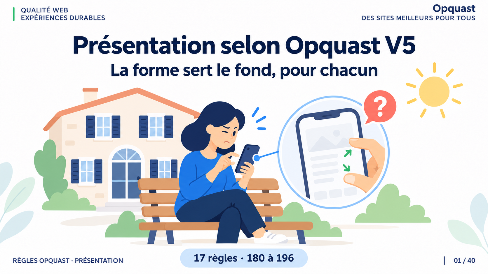
Nora est assise sur un banc de bois devant une maison. Elle regarde son téléphone, un œil plissé. Dans un médaillon relié au téléphone, deux doigts s’écartent sur une page aux éléments très pâles ; une bulle corail avec un point d’interrogation accompagne le geste. Un soleil éclaire la scène. Le slogan est sous le titre et le nombre de règles dans un cartouche sous le banc.
Textes affichés dans l’image
- QUALITÉ WEB
- EXPÉRIENCES DURABLES
- Opquast
- DES SITES MEILLEURS POUR TOUS
- Présentation selon Opquast V5
- La forme sert le fond, pour chacun
- 17 règles · 180 à 196
- RÈGLES OPQUAST · PRÉSENTATION
- 01 / 40
Une page juste peut rester illisible
- Nora veut s’inscrire à un atelier depuis un banc, en plein soleil.
- Le texte gris pâle s’efface, et la page refuse de s’agrandir.
- Le contenu est complet et exact, et pourtant il ne lui parvient pas.
- La rubrique Présentation ne parle pas de beauté, qui reste subjective.
- Elle parle de ce qui permet au contenu d’arriver jusqu’à chacun : couleurs, contrastes, styles, tailles, typographie, impression.
Mémo oral
- La forme sert le fond, pour chacun.
Transition
- Lire une page avec d’autres yeux s’apprend : reconnaître, distinguer, vérifier.
Slide 2 - Notre contrat : reconnaître, distinguer, vérifier
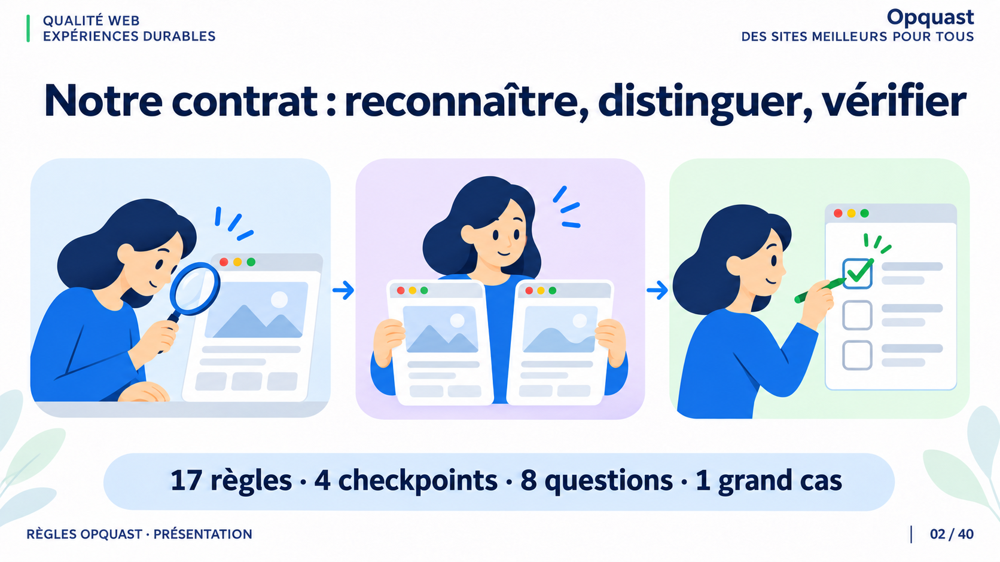
Trois panneaux pastel sont reliés de gauche à droite par des flèches. Nora examine une page à la loupe, compare deux pages, puis coche une case sur une fiche. Un bandeau sous ces trois scènes annonce les nombres de règles, de checkpoints, de questions et de grands cas.
Textes affichés dans l’image
- QUALITÉ WEB
- EXPÉRIENCES DURABLES
- Opquast
- DES SITES MEILLEURS POUR TOUS
- Notre contrat : reconnaître, distinguer, vérifier
- 17 règles · 4 checkpoints · 8 questions · 1 grand cas
- RÈGLES OPQUAST · PRÉSENTATION
- 02 / 40
Reconnaître, distinguer, vérifier
- Face à une page réelle, il s’agit d’abord de reconnaître la situation en jeu.
- Il faut ensuite la distinguer d’une situation voisine, par exemple la couleur seule et le contraste.
- Enfin, chaque règle a son contrôle : désactiver, mesurer, inspecter, zoomer ou imprimer.
- Distinguer évite d’appliquer le bon correctif au mauvais défaut.
- Les checkpoints et questions sont des exercices originaux, pas des questions officielles d’examen.
Mémo oral
- Reconnaître, distinguer, vérifier.
Transition
- Pour reconnaître, il faut d’abord savoir où regarder.
Slide 3 - Six actes pour parcourir la présentation
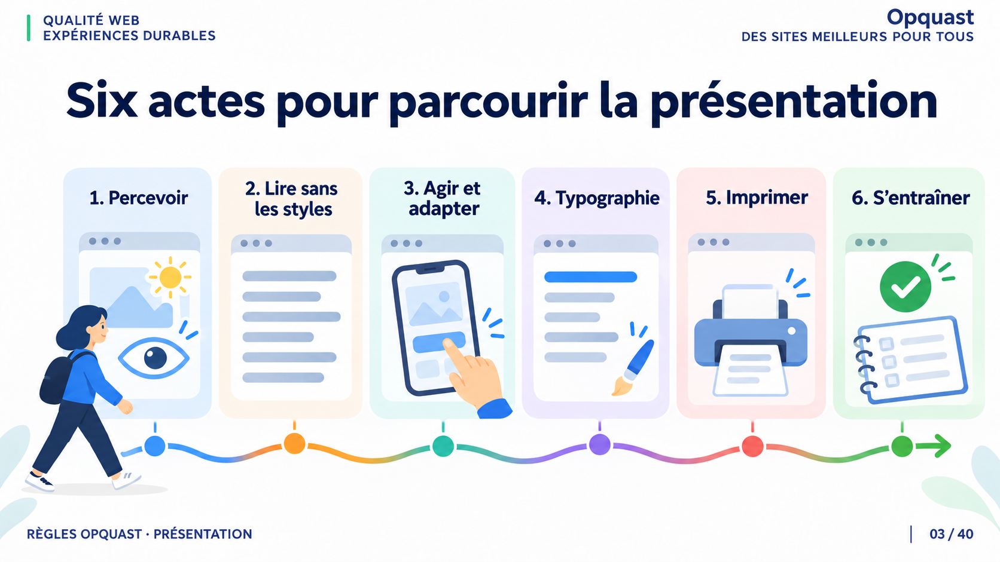
Six cartes alignées sont reliées par un chemin ondulé à pastilles colorées. Nora marche devant la première. Les cartes montrent successivement un œil devant une page et un soleil, une page en lignes, un téléphone touché du doigt, du texte avec un pinceau, une imprimante, puis un carnet et une coche.
Textes affichés dans l’image
- QUALITÉ WEB
- EXPÉRIENCES DURABLES
- Opquast
- DES SITES MEILLEURS POUR TOUS
- Six actes pour parcourir la présentation
- 1. Percevoir
- 2. Lire sans les styles
- 3. Agir et adapter
- 4. Typographie
- 5. Imprimer
- 6. S’entraîner
- RÈGLES OPQUAST · PRÉSENTATION
- 03 / 40
Cinq angles de lecture, puis l’entraînement
- Percevoir : couleurs, contrastes, cohérence graphique.
- Lire sans les styles : ce qui reste quand la mise en forme disparaît, pour un lecteur d’écran ou un robot.
- Agir et adapter : toucher, zoomer, changer d’écran.
- Typographie : textes en image, polices, alignement, majuscules.
- Imprimer : le passage de l’écran au papier.
- S’entraîner : relier les règles entre elles, puis les éprouver sur des cas.
- La checklist Opquast ne regroupe pas les règles ainsi : ces angles servent seulement à les retenir.
Mémo oral
- Cinq angles, puis l’entraînement.
Transition
- Ces angles s’appliquent tous à un même lieu et à son site.
Slide 4 - Le fil rouge : la Maison des Lisières
Devant une maison aux volets bleu marine et à l’auvent vert, Nora consulte son téléphone. Une flèche mène vers trois fenêtres en éventail : le programme avec quatre cartes illustrées, l’inscription avec des champs et un bouton, puis le plan d’accès avec un repère sur une carte.
Textes affichés dans l’image
- QUALITÉ WEB
- EXPÉRIENCES DURABLES
- Opquast
- DES SITES MEILLEURS POUR TOUS
- Le fil rouge : la Maison des Lisières
- Un lieu culturel fictif et son site
- Programme
- Inscription
- Plan d’accès
- RÈGLES OPQUAST · PRÉSENTATION
- 04 / 40
Un lieu, un site, six personnes
- La Maison des Lisières est un lieu culturel imaginaire : ateliers de reliure, de photo, de lecture.
- Son site compte trois pages utiles : le programme, l’inscription et le plan d’accès.
- Nora le consulte surtout sur son téléphone ; Samuel, l’intégrateur, le maintient.
- Théo distingue mal le rouge du vert ; Malik utilise un lecteur d’écran ; Inès est dyslexique.
- Odette, la voisine de Nora, aime annoter le programme sur papier.
Mémo oral
- Un lieu, un site, six personnes.
Transition
- Ce que vivent ces personnes se décrit avec quelques mots précis.
Slide 5 - Six mots pour toute la séance
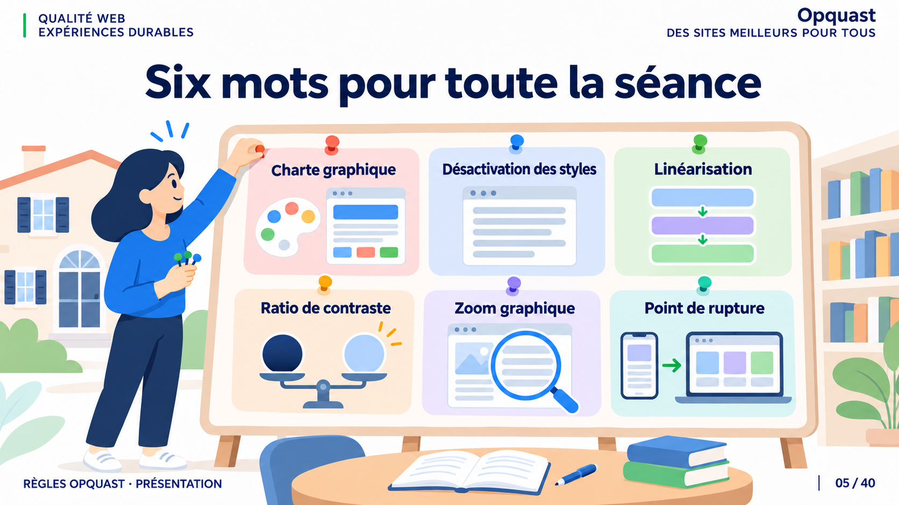
Nora épingle une carte sur un tableau près d’une table de bibliothèque. Six cartes en deux rangées de trois associent les termes à une palette et une page, des lignes sans mise en forme, trois blocs reliés vers le bas, une balance à deux couleurs, une loupe sur une page, puis un téléphone relié à un ordinateur.
Textes affichés dans l’image
- QUALITÉ WEB
- EXPÉRIENCES DURABLES
- Opquast
- DES SITES MEILLEURS POUR TOUS
- Six mots pour toute la séance
- Charte graphique
- Désactivation des styles
- Linéarisation
- Ratio de contraste
- Zoom graphique
- Point de rupture
- RÈGLES OPQUAST · PRÉSENTATION
- 05 / 40
Six notions du glossaire officiel
- Charte graphique : l’ensemble des signes qui forment l’identité visuelle, logo, polices, couleurs.
- Désactivation des styles : la page rendue avec les seuls styles par défaut du navigateur, qui donne une idée de ce qu’exploite un robot ou un lecteur d’écran.
- Linéarisation : la page lue dans l’ordre du code source, et non dans l’ordre visible à l’écran.
- Ratio de contraste : la mesure de l’écart de luminosité entre un texte et son fond, selon l’algorithme des WCAG 2.0.
- Zoom graphique : il agrandit tout, textes et images, à la différence du zoom typographique, limité aux caractères.
- Point de rupture : le palier où une page adaptative bascule d’un ensemble de styles à un autre.
Mémo oral
- Six mots, une langue commune.
Transition
- Ces notions servent à des gestes de contrôle précis.
Slide 6 - Cinq gestes de vérification
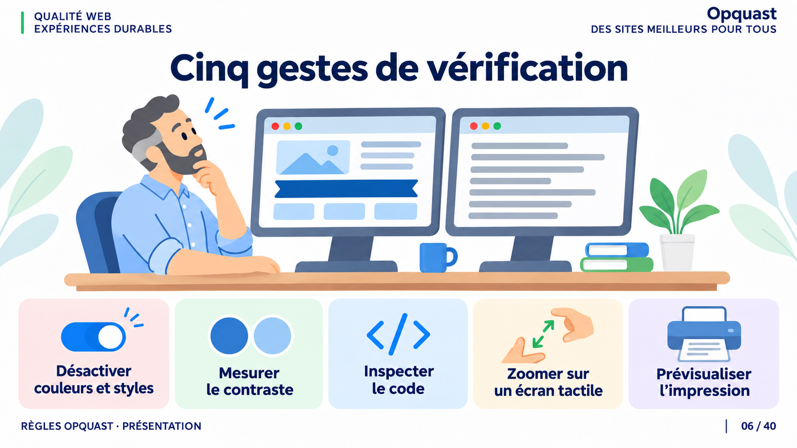
Samuel, assis à son bureau, compare deux écrans : l’un contient une page mise en forme, l’autre des lignes grises empilées. Cinq cartes au-dessous associent les gestes à un interrupteur, deux disques de contraste, des chevrons de code, deux doigts qui s’écartent et une imprimante.
Textes affichés dans l’image
- QUALITÉ WEB
- EXPÉRIENCES DURABLES
- Opquast
- DES SITES MEILLEURS POUR TOUS
- Cinq gestes de vérification
- Désactiver couleurs et styles
- Mesurer le contraste
- Inspecter le code
- Zoomer sur un écran tactile
- Prévisualiser l’impression
- RÈGLES OPQUAST · PRÉSENTATION
- 06 / 40
Cinq gestes tirés du livre
- Désactiver les couleurs, puis les styles, et comparer : le livre conseille un double écran.
- Mesurer le contraste avec un outil dédié plutôt qu’à l’œil.
- Inspecter le code : polices, alignement, contenus masqués ou générés.
- Zoomer du bout des doigts sur un écran tactile.
- Prévisualiser l’impression, puis confirmer au code quand la règle le demande.
- Dans les cas concrets, c’est souvent le geste qui révèle le défaut qui désigne la règle.
Mémo oral
- Désactiver, mesurer, inspecter, zoomer, imprimer.
Transition
- Le premier repère est ce que l’on perçoit.
Slide 7 - Une même identité, de page en page
Nora s’arrête devant son ordinateur, une bulle d’interrogation au-dessus d’elle. Deux fenêtres sont reliées par une flèche corail en pointillés : la première a un menu bleu marine et des cartes vert pâle ; la seconde montre un formulaire violet sur fond gris. Le cartouche d’acte est au-dessus du titre ; le badge est à droite et deux encadrés présentent l’impact et la garantie.
Textes affichés dans l’image
- QUALITÉ WEB
- EXPÉRIENCES DURABLES
- Opquast
- DES SITES MEILLEURS POUR TOUS
- R. 180
- Acte 1 · Percevoir
- Une même identité, de page en page
- IMPACT - Je crois avoir quitté le site
- GARANTIE - Menus, styles et largeurs restent cohérents
- RÈGLES OPQUAST · PRÉSENTATION
- 07 / 40
Règles Opquast de la slide
Un service tiers qui casse la continuité
- La page de paiement est fournie par un prestataire et n’a plus les couleurs, la police ni la largeur du site.
- Beau ou non, c’est subjectif ; mais l’univers graphique doit rester cohérent d’une page à l’autre.
- La solution : des feuilles de styles communes à tout le site.
- L’avis de l’expert insiste sur la rigueur du wireframing et des maquettes, et sur une intégration transparente des services embarqués.
Impact du non-respect
- L’utilisateur croit avoir quitté le service et hésite à poursuivre.
Ce que garantit la règle
- La cohérence graphique vise à maintenir une visite homogène et continue, avec un service identifiable de page en page.
- Selon l’avis de l’expert, la règle peut ne pas être retenue pour des contenus archivés non couverts par une refonte graphique.
Contrôle et limites
- Le contrôle compare les menus et leurs emplacements, les couleurs des sections, les largeurs, les titres et les textes sur toutes les pages, y compris les services tiers.
Mémo oral
- Une page, un même site.
Transition
- La couleur sert l’identité ; elle peut aussi porter une information.
Slide 8 - Obligatoire, pas seulement en rouge
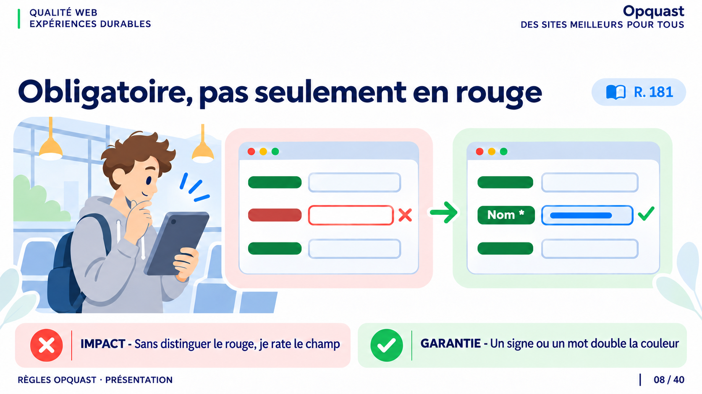
Théo consulte sa tablette. À côté, deux formulaires de trois champs sont reliés par une flèche verte. À gauche, une étiquette et un contour rouges se distinguent des étiquettes vertes ; une croix accompagne le champ vide. À droite, le champ central rempli porte « Nom * » sur une étiquette verte et une coche. Le badge est près du titre ; les encadrés du bas relient l’impact à l’ajout d’un signe ou d’un mot.
Textes affichés dans l’image
- QUALITÉ WEB
- EXPÉRIENCES DURABLES
- Opquast
- DES SITES MEILLEURS POUR TOUS
- R. 181
- Obligatoire, pas seulement en rouge
- Nom *
- IMPACT - Sans distinguer le rouge, je rate le champ
- GARANTIE - Un signe ou un mot double la couleur
- RÈGLES OPQUAST · PRÉSENTATION
- 08 / 40
Règles Opquast de la slide
Un champ obligatoire signalé en rouge
- Le livre prend cet exemple : un champ obligatoire signalé en rouge pourra ne pas être perçu par tous.
- Théo distingue mal le rouge du vert : pour lui, cette étiquette ne se détache pas des autres.
- La couleur reste utile à l’ergonomie ; la règle demande seulement qu’elle ne soit pas seule.
- Compléments cités par le livre : un balisage d’emphase, une mention textuelle comme l’astérisque, des hachures, motifs ou bordures dans les cartes et graphiques.
- Une infobulle ne suffit pas : son accès au clavier n’est pas assuré dans tous les navigateurs.
Impact du non-respect
- L’information échappe à qui ne distingue pas la couleur, et la démarche échoue.
Ce que garantit la règle
- Le complément à la couleur vise à préserver l’information quand les couleurs ne sont pas distinguées ou restituées.
Contrôle et limites
- Le contrôle compare la page normale à une version sans couleurs, avec les images en niveaux de gris ; cette simulation de contrôle ne représente pas la vision d’une personne daltonienne.
Mémo oral
- La couleur aide, elle ne parle pas seule.
Transition
- Même bien codée, une information doit encore être lisible sur son fond.
Slide 9 - Lisible même en plein soleil
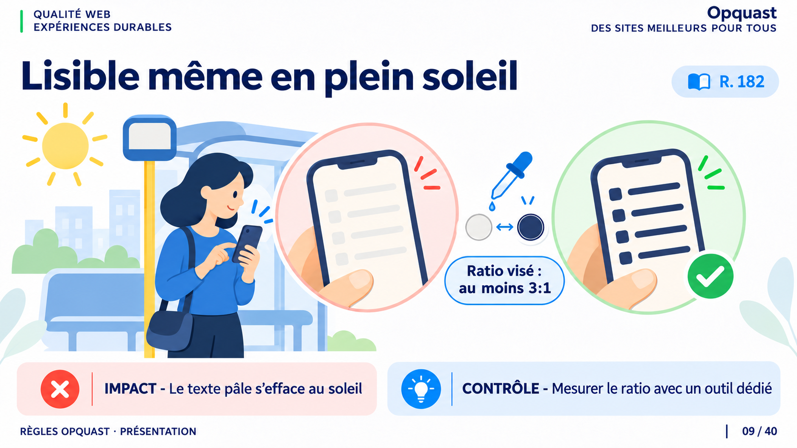
Nora consulte son téléphone à un arrêt de bus ensoleillé. Deux médaillons comparent une page aux lignes très pâles et une page aux lignes bleu marine, accompagnée d’une coche. Entre eux, une pipette et deux pastilles évoquent la mesure ; un cartouche indique le ratio visé. Le badge et deux encadrés nomment l’impact et le contrôle.
Textes affichés dans l’image
- QUALITÉ WEB
- EXPÉRIENCES DURABLES
- Opquast
- DES SITES MEILLEURS POUR TOUS
- R. 182
- Lisible même en plein soleil
- Ratio visé : au moins 3:1
- IMPACT - Le texte pâle s’efface au soleil
- CONTRÔLE - Mesurer le ratio avec un outil dédié
- RÈGLES OPQUAST · PRÉSENTATION
- 09 / 40
Règles Opquast de la slide
Un seuil mesuré, pas une impression
- On croit souvent le contraste réservé aux personnes malvoyantes ; le livre rappelle qu’un contraste suffisant est plus agréable pour tout le monde.
- La règle retient un ratio minimal de 3 pour 1, mesuré avec l’algorithme des WCAG 2.0.
- On relève couleur du texte et couleur du fond avec un outil dédié ; sur un fond en dégradé ou photographique, au point le plus défavorable.
- Le seuil du livre ne suffit pas à établir une conformité aux WCAG : leurs niveaux distinguent notamment le texte courant des grands textes.
Impact du non-respect
- Le texte s’efface, la lecture fatigue, et une partie du public ne lit plus.
Ce que garantit la règle
- Un contraste mesuré contribue à la lisibilité, sans valoir à lui seul conformité aux WCAG.
Contrôle et limites
- Le livre retient 3 pour 1 quelles que soient la taille et la graisse ; les WCAG 2.0 au niveau AA demandent 4,5 pour 1 pour le texte courant, avec un seuil de 3 pour 1 pour les grands textes.
- Les WCAG sont des recommandations internationales, et le seuil du livre ne prouve pas un niveau de conformité WCAG.
- Sur un fond à motif, en dégradé ou photographique, la mesure se fait au point le plus défavorable près du texte, en tenant compte des changements de superposition possibles avec le zoom texte.
Mémo oral
- On mesure, on ne devine pas.
Transition
- Couleur seule et contraste se confondent souvent ; ce sont pourtant deux défauts distincts.
Slide 10 - Couleur seule ou contraste : deux défauts
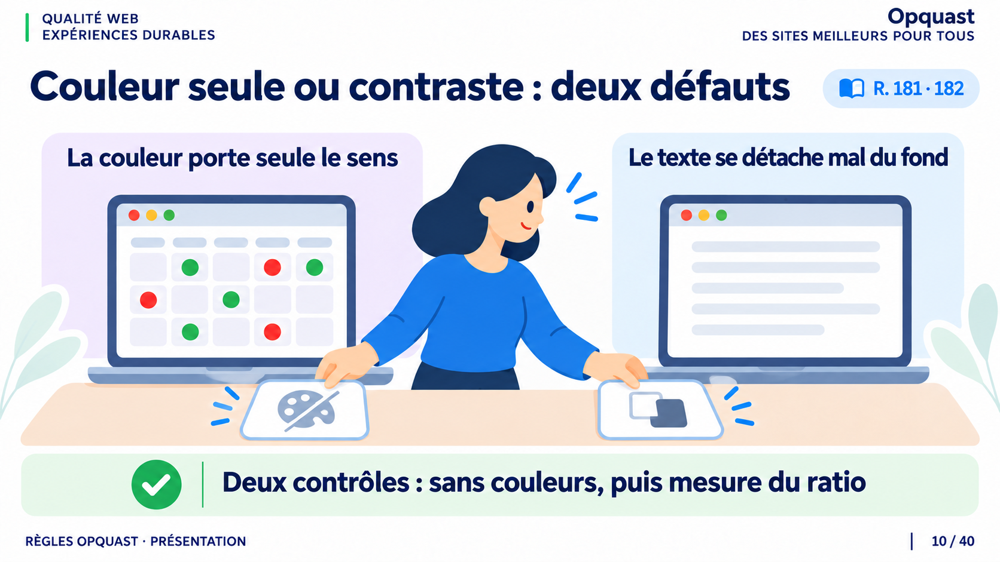
Nora se tient entre deux ordinateurs. Le panneau de gauche montre un calendrier dont les cases portent des pastilles rouges ou vertes ; celui de droite montre des lignes très pâles sur fond clair. Devant chacun, une carte représente respectivement une palette barrée et deux carrés de contraste. Un bandeau vert réunit les deux contrôles ; le badge comporte deux règles.
Textes affichés dans l’image
- QUALITÉ WEB
- EXPÉRIENCES DURABLES
- Opquast
- DES SITES MEILLEURS POUR TOUS
- R. 181 · 182
- Couleur seule ou contraste : deux défauts
- La couleur porte seule le sens
- Le texte se détache mal du fond
- Deux contrôles : sans couleurs, puis mesure du ratio
- RÈGLES OPQUAST · PRÉSENTATION
- 10 / 40
Règles Opquast de la slide
Deux défauts que l’on résume trop vite
- À gauche, la couleur porte seule une information : rouge, complet ; vert, libre.
- Sans percevoir la différence, l’information disparaît : on vérifie en supprimant les couleurs.
- À droite, rien n’est codé par la couleur, mais le texte se détache mal de son fond : on vérifie en mesurant.
- Un texte peut être bien contrasté et porter une information par la seule couleur ; l’inverse existe aussi.
Contrôle et limites
- Ce rapprochement est pédagogique, pas une catégorie officielle Opquast.
- Pour les liens distingués uniquement par leur couleur, l’avis de l’expert suggère aussi un contraste avec le texte environnant ; leur différenciation relève également de la rubrique Liens.
Mémo oral
- Sens porté par la couleur, ou lisibilité du texte ?
Transition
- Une information perdue, un texte illisible, une identité rompue : trois pertes, trois règles.
Slide 11 - Checkpoint 1 : percevoir
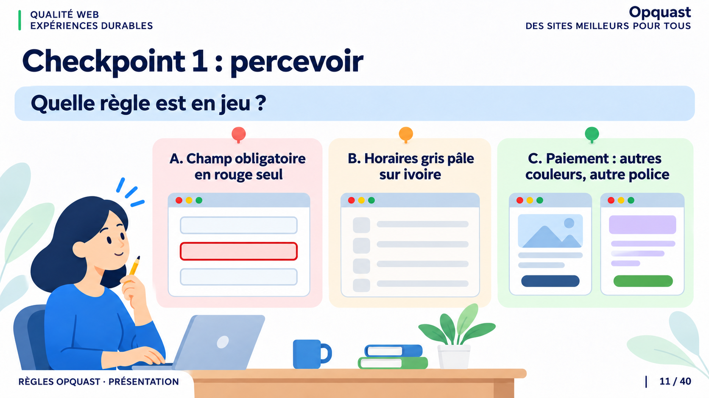
Nora réfléchit devant son ordinateur, un crayon à la main. Sous la question, trois cartes A, B et C montrent un formulaire avec un champ rouge, des lignes gris pâle sur ivoire, puis deux pages aux styles différents.
Textes affichés dans l’image
- QUALITÉ WEB
- EXPÉRIENCES DURABLES
- Opquast
- DES SITES MEILLEURS POUR TOUS
- Checkpoint 1 : percevoir
- Quelle règle est en jeu ?
- A. Champ obligatoire en rouge seul
- B. Horaires gris pâle sur ivoire
- C. Paiement : autres couleurs, autre police
- RÈGLES OPQUAST · PRÉSENTATION
- 11 / 40
Règles Opquast de la slide
Trois pertes différentes
- Dans chaque cas, l’utilisateur perd quelque chose : une information, la lisibilité, ou le sentiment d’être sur le même site.
- Cette perte désigne la règle.
Corrigé par l’objet des règles
- A relève de la couleur seule : le caractère obligatoire ne dispose d’aucun autre signe, même si le rouge est bien contrasté.
- B relève du contraste : les horaires se détachent mal du fond, sans qu’une information soit codée par la couleur.
- C relève de la cohérence graphique : la page de paiement rompt l’identité du site, sans désactivation des styles.
Mémo oral
- Une perte, une règle.
Transition
- Que reste-t-il d’une page quand la mise en forme disparaît ?
Slide 12 - Sans les styles, la page garde son sens
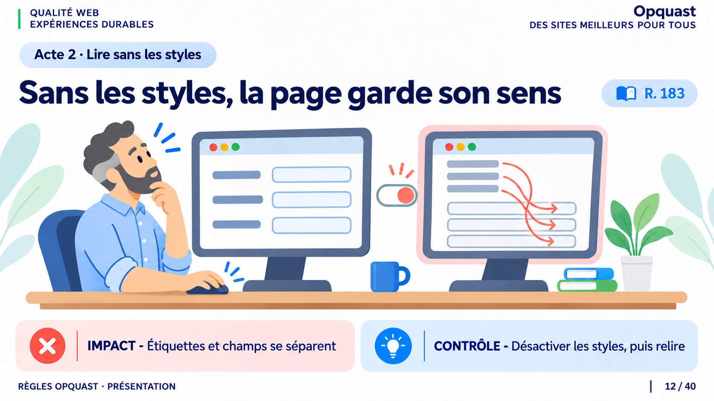
Samuel compare deux écrans. À gauche, trois étiquettes sont en face de trois champs ; à droite, toutes les étiquettes sont au-dessus des champs et des flèches corail se croisent entre eux. Un interrupteur figure entre les écrans. Le cartouche d’acte, le badge et les encadrés d’impact et de contrôle accompagnent la scène.
Textes affichés dans l’image
- QUALITÉ WEB
- EXPÉRIENCES DURABLES
- Opquast
- DES SITES MEILLEURS POUR TOUS
- R. 183
- Acte 2 · Lire sans les styles
- Sans les styles, la page garde son sens
- IMPACT - Étiquettes et champs se séparent
- CONTRÔLE - Désactiver les styles, puis relire
- RÈGLES OPQUAST · PRÉSENTATION
- 12 / 40
Règles Opquast de la slide
Le sens doit tenir dans le HTML
- Les styles sont une couche de présentation ; le contenu doit rester lisible et compréhensible sans elle.
- Un lecteur d’écran, un robot ou un navigateur qui n’applique pas les styles lisent la page dans l’ordre du code.
- Le livre cite le menu coupé en deux et l’organigramme réduit à des blocs sans sens.
- L’avis de l’expert vise aussi les formulaires dont champs et étiquettes ne sont placés côte à côte que par la CSS.
- Ce cas rejoint la rubrique Formulaires, qui demande d’associer chaque champ à son étiquette dans le code.
Impact du non-respect
- Sans la mise en forme, l’utilisateur ne sait plus quelle étiquette décrit quel champ.
Ce que garantit la règle
- Le contrôle vise à préserver le contenu, son ordre et son sens avec ou sans les styles du site.
Contrôle et limites
- La comparaison avec et sans CSS doit vérifier l’absence de perte d’information, la lisibilité et l’ordre logique ; une image transparente peut dépendre du fond donné par les styles.
- L’inspecteur de code permet de confirmer la cause d’une perte ; la désactivation des styles ne remplace pas un essai avec un lecteur d’écran.
Mémo oral
- Le sens tient dans le HTML.
Transition
- Le sens peut aussi se perdre dans la façon de désigner un contenu.
Slide 13 - « En haut à droite », pour qui ?
À gauche, Malik porte un casque devant son ordinateur ; une bulle cite le bouton rond en haut à droite et un médaillon montre un bouton bleu à cet emplacement. À droite, Nora regarde son téléphone avec inquiétude ; le médaillon corail montre le bouton en bas de l’écran. Deux points d’interrogation accompagnent les scènes. Les encadrés relient la consigne à son impact et à une désignation par nom ou lien.
Textes affichés dans l’image
- QUALITÉ WEB
- EXPÉRIENCES DURABLES
- Opquast
- DES SITES MEILLEURS POUR TOUS
- R. 184
- « En haut à droite », pour qui ?
- « Le bouton rond en haut à droite »
- IMPACT - Sans la vue, la consigne échoue
- GARANTIE - Un nom ou un lien désigne le contenu
- RÈGLES OPQUAST · PRÉSENTATION
- 13 / 40
Règles Opquast de la slide
Une consigne qui suppose de voir l’écran
- Désigner un contenu par sa forme ou sa position, c’est présumer que le lecteur voit l’écran tel qu’il a été conçu.
- Malik reçoit la consigne par synthèse vocale : la forme et la position du bouton ne lui sont pas restituées.
- Sur le téléphone de Nora, la page s’est réorganisée : le bouton n’est plus en haut à droite.
- Le livre demande un autre moyen, en plus : le nom du contenu, un identifiant comme « figure 1 », un lien vers une ancre.
Impact du non-respect
- L’utilisateur ne retrouve pas le contenu désigné, ici le bouton de l’aide.
Ce que garantit la règle
- Une désignation complémentaire permet de retrouver le contenu sans dépendre de l’affichage graphique prévu.
Contrôle et limites
- Indiquer une forme ou une position reste possible si un autre moyen identifie aussi le contenu, par exemple un nom, un identifiant ou un lien vers une ancre.
Mémo oral
- Nommer, pas seulement situer.
Transition
- Ce qui est caché à l’écran peut aussi manquer à l’oreille.
Slide 14 - Caché à l’écran, pas à l’oreille
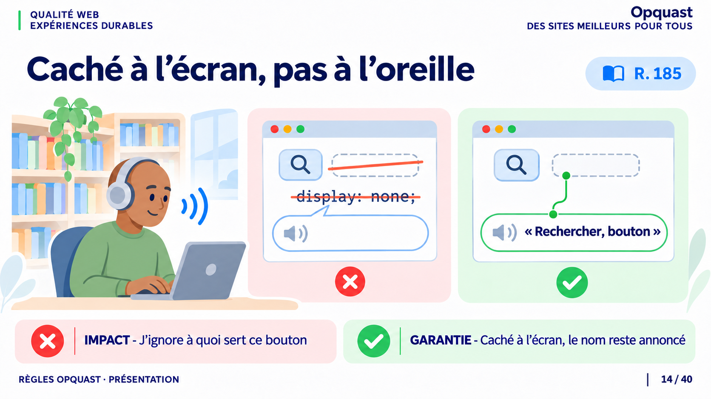
Malik écoute devant son ordinateur. Deux panneaux montrent un bouton loupe et une zone en pointillés. À gauche, la zone et le code « display: none; » sont barrés en corail ; la bulle sonore ne porte aucun texte et une croix apparaît dessous. À droite, la zone est reliée en vert à la bulle « Rechercher, bouton », avec une coche. Deux encadrés précisent l’impact et la garantie.
Textes affichés dans l’image
- QUALITÉ WEB
- EXPÉRIENCES DURABLES
- Opquast
- DES SITES MEILLEURS POUR TOUS
- R. 185
- Caché à l’écran, pas à l’oreille
- display: none;
- « Rechercher, bouton »
- IMPACT - J’ignore à quoi sert ce bouton
- GARANTIE - Caché à l’écran, le nom reste annoncé
- RÈGLES OPQUAST · PRÉSENTATION
- 14 / 40
Règles Opquast de la slide
Deux façons de cacher
- Le bouton de recherche n’affiche qu’une loupe ; son nom, « Rechercher », est prévu pour la synthèse vocale.
- Masqué avec
display: none, ce nom disparaît pour tout le monde, lecteur d’écran compris. - Les propriétés qui retirent un contenu,
display,visibility, l’attributhiddenouaria-hidden, sont admises pour ce qui s’affichera sur action : un onglet, un menu déroulant. - Pour ce qui doit rester restitué, le livre cite le positionnement hors écran, le rognage ou les attributs ARIA de libellé.
- L’avis de l’expert ajoute qu’une page peut généralement se passer de contenus réservés aux lecteurs d’écran : l’information pertinente est le plus souvent la même pour tous.
Impact du non-respect
- Le nom du bouton n’est pas annoncé ; Malik ne sait pas à quoi il sert.
Ce que garantit la règle
- Un masquage approprié vise à conserver la restitution du contenu destiné au lecteur d’écran.
Contrôle et limites
- Le contrôle porte sur le code généré et les CSS : les contenus destinés au lecteur d’écran ne doivent pas être retirés par display: none, visibility: hidden, hidden ou aria-hidden="true".
- L’exception concerne les contenus destinés à apparaître sur action, comme un panneau d’onglet ou un menu déroulant ; le livre cite aussi title pour une étiquette de champ dans ses solutions.
Mémo oral
- Caché à l’œil, pas à l’oreille.
Transition
- Après ce que l’on cache, ce que les styles ajoutent.
Slide 15 - Ce que la CSS écrit, le HTML le dit
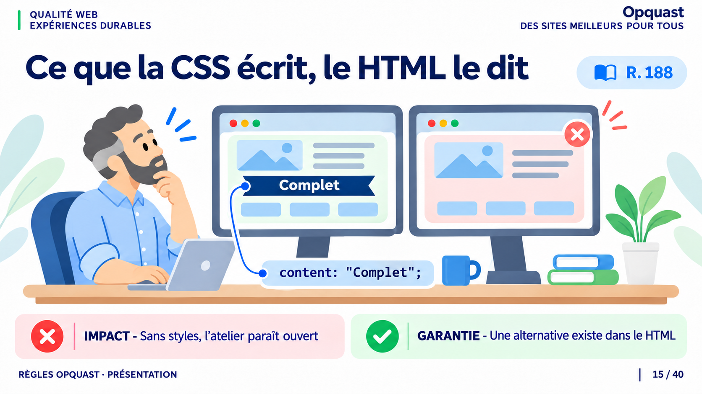
Samuel compare deux pages d’atelier. Sur l’écran gauche, un ruban bleu marine porte « Complet » ; une liaison mène au code « content: "Complet"; ». Sur l’écran droit, le ruban et le mot ont disparu, et une croix corail signale la perte. Le badge et les encadrés d’impact et de garantie entourent cette comparaison.
Textes affichés dans l’image
- QUALITÉ WEB
- EXPÉRIENCES DURABLES
- Opquast
- DES SITES MEILLEURS POUR TOUS
- R. 188
- Ce que la CSS écrit, le HTML le dit
- Complet
- content: "Complet";
- IMPACT - Sans styles, l’atelier paraît ouvert
- GARANTIE - Une alternative existe dans le HTML
- RÈGLES OPQUAST · PRÉSENTATION
- 15 / 40
Règles Opquast de la slide
Une information fabriquée par la feuille de styles
- Le ruban « Complet » est écrit par la propriété
contentde la CSS. - Le livre vise de la même façon les images d’arrière-plan et les pseudo-éléments
:beforeet:after. - Sans les styles, cette information disparaît, alors qu’une image ou un texte HTML seraient restés.
- L’avis de l’expert reconnaît l’intérêt de l’astuce pour personnaliser des boutons, mais elle ne permet pas une intégration robuste et accessible.
Impact du non-respect
- L’atelier semble ouvert à qui consulte la page sans styles ; robots et outils d’indexation ignorent l’information.
Ce que garantit la règle
- Une alternative dans le HTML vise à préserver l’information produite par la CSS lorsque les styles ne sont pas restitués.
Contrôle et limites
- Le contrôle examine content, background-image et les pseudo-éléments :before et :after, puis compare avec et sans images d’arrière-plan.
- Une décoration sans information n’est pas concernée ; c’est l’information absente par ailleurs du HTML qui exige une alternative.
Mémo oral
- Ce que la CSS écrit, le HTML le dit aussi.
Transition
- Une police peut, elle aussi, fabriquer un faux contenu.
Slide 16 - Une icône de police n’a pas de nom
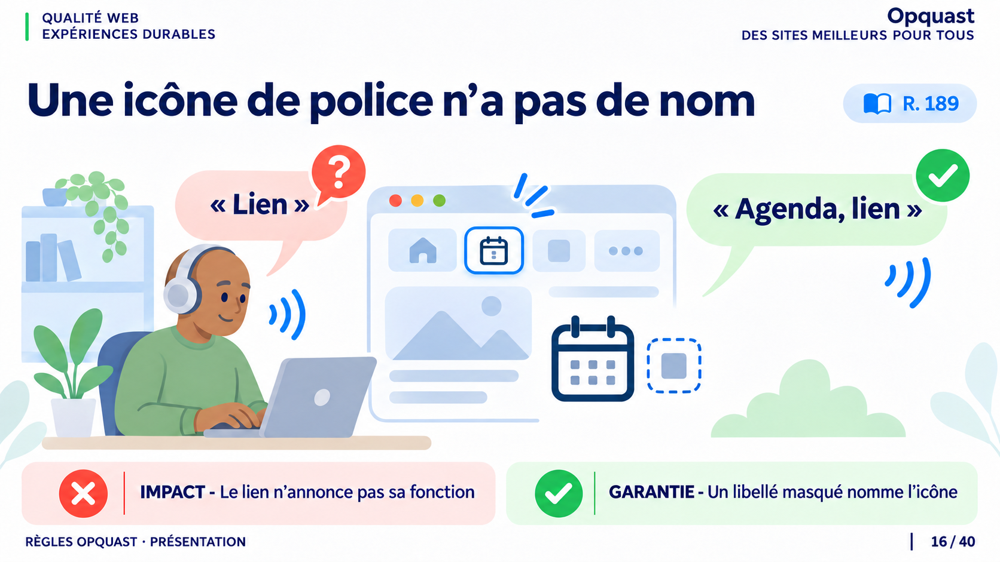
Malik écoute devant son ordinateur. Une fenêtre met en évidence un calendrier dans une rangée d’icônes. Le calendrier est repris en grand à côté d’un caractère abstrait dans un carré pointillé. Une bulle corail annonce « Lien » avec un point d’interrogation ; une bulle verte annonce « Agenda, lien » avec une coche. Le badge et deux encadrés complètent la scène.
Textes affichés dans l’image
- QUALITÉ WEB
- EXPÉRIENCES DURABLES
- Opquast
- DES SITES MEILLEURS POUR TOUS
- R. 189
- Une icône de police n’a pas de nom
- « Lien »
- « Agenda, lien »
- IMPACT - Le lien n’annonce pas sa fonction
- GARANTIE - Un libellé masqué nomme l’icône
- RÈGLES OPQUAST · PRÉSENTATION
- 16 / 40
Règles Opquast de la slide
Un caractère détourné en icône
- Les polices téléchargeables permettent de remplacer des images d’icônes par un caractère graphique, une astuce appréciée pour les performances.
- Ce caractère est arbitraire : restitué par une synthèse vocale, il n’a aucun sens.
- Le livre demande une alternative pour chaque information portée par une police spécifique, par exemple un libellé explicite masqué dans le contenu du lien.
Impact du non-respect
- Malik entend « lien » sans savoir où il mène ; les moteurs de recherche ne comprennent pas davantage.
Ce que garantit la règle
- Une alternative appropriée permet de donner un sens à l’icône de police dans le HTML.
Contrôle et limites
- L’examen du code vérifie une alternative dans le contenu HTML pour chaque information portée par une police spécifique ; un lien doit aussi avoir un intitulé.
Mémo oral
- Une icône de police se nomme dans le HTML.
Transition
- Couleur, forme, position : trois repères visuels à ne jamais laisser seuls.
Slide 17 - Couleur, forme, position : jamais seules
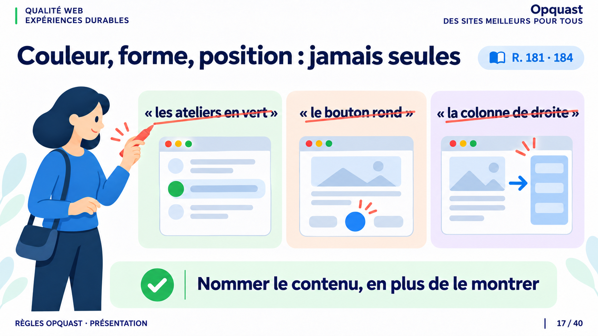
Nora tient un feutre corail devant trois panneaux. Chaque consigne est barrée : les ateliers en vert, le bouton rond, la colonne de droite. Les illustrations montrent respectivement une pastille verte dans une liste, un bouton rond bleu et une colonne pointée par une flèche. Un seul bandeau vert conseille de nommer le contenu ; le badge cite deux règles.
Textes affichés dans l’image
- QUALITÉ WEB
- EXPÉRIENCES DURABLES
- Opquast
- DES SITES MEILLEURS POUR TOUS
- R. 181 · 184
- Couleur, forme, position : jamais seules
- « les ateliers en vert »
- « le bouton rond »
- « la colonne de droite »
- Nommer le contenu, en plus de le montrer
- RÈGLES OPQUAST · PRÉSENTATION
- 17 / 40
Règles Opquast de la slide
Même logique, deux règles
- « Les ateliers en vert » : la couleur seule désigne, c’est la règle sur la couleur.
- « Le bouton rond » et « la colonne de droite » : la forme et la position désignent, c’est la règle voisine.
- Dans les deux cas, un repère visuel ne doit pas être le seul moyen.
- Le remède est commun : nommer le contenu, ajouter un identifiant ou un lien.
- Pour choisir la règle, il suffit de repérer quel repère visuel est en jeu.
Contrôle et limites
- Ce rapprochement est pédagogique, pas un regroupement officiel ; le contrôle de la couleur compare sans couleurs, celui de la forme et de la position relit les consignes et renvois.
Mémo oral
- Couleur, une règle ; forme ou position, une autre ; le nom, toujours.
Transition
- Sans styles, chaque mécanisme laisse une trace différente.
Slide 18 - Checkpoint 2 : sans styles
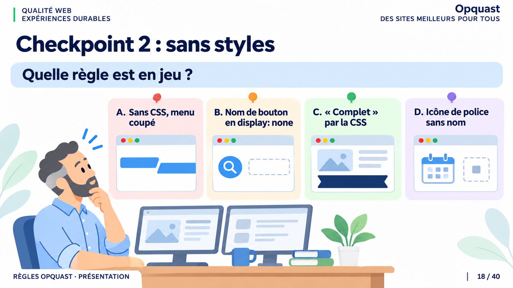
Samuel réfléchit devant deux écrans. Quatre cartes A à D sont alignées sous la question : un menu en deux morceaux, une loupe à côté d’une zone pointillée, une page avec un ruban bleu marine sans mot inscrit, puis un calendrier à côté d’un carré pointillé. Les constats sont écrits au-dessus de ces dessins.
Textes affichés dans l’image
- QUALITÉ WEB
- EXPÉRIENCES DURABLES
- Opquast
- DES SITES MEILLEURS POUR TOUS
- Checkpoint 2 : sans styles
- Quelle règle est en jeu ?
- A. Sans CSS, menu coupé
- B. Nom de bouton en display: none
- C. « Complet » par la CSS
- D. Icône de police sans nom
- RÈGLES OPQUAST · PRÉSENTATION
- 18 / 40
Règles Opquast de la slide
Quatre mécanismes
- Un contenu peut être mal ordonné, mal caché, fabriqué par la CSS ou porté par une police d’icônes.
- Le mécanisme en cause désigne la règle.
Corrigé par l’objet des règles
- A concerne le sens sans les styles : l’ordre du menu est rompu, ce qui ne se résout pas par une charte commune.
- B concerne le contenu dissimulé au lecteur d’écran : le nom existant est caché par display: none et ne s’affichera jamais sur action.
- C concerne le contenu généré par la CSS : l’information doit avoir une alternative dans le HTML, elle n’est pas un texte existant que l’on aurait masqué.
- D concerne le pictogramme typographique sans alternative : le caractère de police n’est pas une image de texte.
Mémo oral
- Ordonner, bien cacher, doubler en HTML, nommer l’icône.
Transition
- Lire la page ne suffit pas : il faut aussi pouvoir agir sur elle.
Slide 19 - Un bouton à la taille du doigt
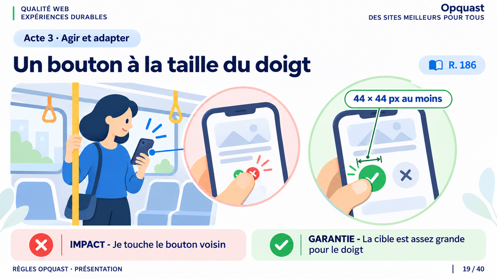
Nora consulte son téléphone dans le tram. Le médaillon corail montre un doigt couvrant deux petits boutons, l’un à coche et l’autre à croix. Le médaillon vert montre ces boutons agrandis, le doigt sur celui à coche ; une cote pointe sa largeur et indique « 44 × 44 px au moins ». Le cartouche d’acte, le badge et deux encadrés accompagnent les scènes.
Textes affichés dans l’image
- QUALITÉ WEB
- EXPÉRIENCES DURABLES
- Opquast
- DES SITES MEILLEURS POUR TOUS
- R. 186
- Acte 3 · Agir et adapter
- Un bouton à la taille du doigt
- 44 × 44 px au moins
- IMPACT - Je touche le bouton voisin
- GARANTIE - La cible est assez grande pour le doigt
- RÈGLES OPQUAST · PRÉSENTATION
- 19 / 40
Règles Opquast de la slide
Pouvoir toucher sans viser
- Les écrans tactiles ont imposé une contrainte simple : pouvoir cliquer sans difficulté avec les doigts.
- La règle s’appuie sur une valeur chiffrée des recommandations d’accessibilité : au moins 44 pixels sur 44 par défaut, 48 sur 48 pour Android.
- Elle vise chaque élément cliquable, boutons comme liens.
Impact du non-respect
- Le doigt active l’élément voisin : action annulée, manipulation à refaire.
Ce que garantit la règle
- Une cible suffisante par défaut contribue à limiter les fausses manipulations au doigt.
Contrôle et limites
- La mesure vise la taille par défaut de chaque bouton et lien ; l’espacement entre les cibles n’est pas un critère de cette règle dans le livre.
- Les valeurs citées s’appuient sur les recommandations internationales WCAG du W3C.
Mémo oral
- Une cible, un doigt.
Transition
- Toucher, c’est aussi pouvoir agrandir.
Slide 20 - Ne pas bloquer le zoom
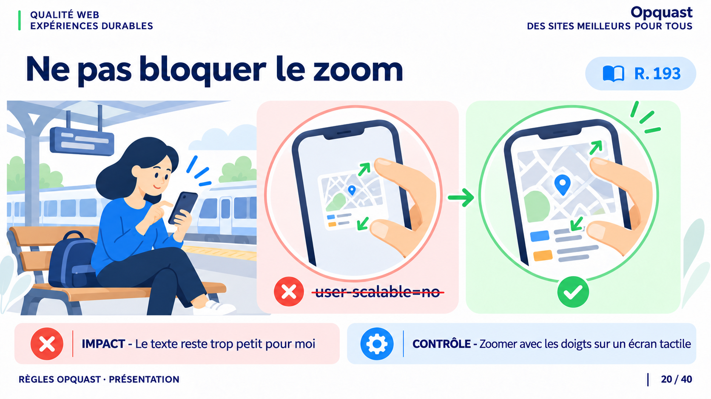
Nora est assise sur un banc de quai, téléphone en main. Deux vues agrandies montrent des doigts qui s’écartent : à gauche, le plan reste petit ; à droite, il occupe davantage l’écran. Une flèche verte relie les vues. Sous la première, « user-scalable=no » est barré et accompagné d’une croix ; la seconde porte une coche. Le badge et les deux encadrés relient impact et contrôle tactile.
Textes affichés dans l’image
- QUALITÉ WEB
- EXPÉRIENCES DURABLES
- Opquast
- DES SITES MEILLEURS POUR TOUS
- R. 193
- Ne pas bloquer le zoom
- user-scalable=no
- IMPACT - Le texte reste trop petit pour moi
- CONTRÔLE - Zoomer avec les doigts sur un écran tactile
- RÈGLES OPQUAST · PRÉSENTATION
- 20 / 40
Règles Opquast de la slide
Un réglage qui appartient à l’utilisateur
- Le livre le dit simplement : il est toujours décevant de ne pas pouvoir agrandir un texte trop petit sur sa tablette ou son smartphone.
- La règle demande de ne pas utiliser de mécanisme qui bloque le zoom, en particulier les attributs
minimum-scale,maximum-scaleetuser-scalablede la balisemeta viewport. - L’avis de l’expert écarte une illusion : une mise en forme adaptée aux mobiles ne garantit pas la lisibilité pour tous.
Impact du non-respect
- Le texte reste trop petit, et l’utilisateur n’a aucun moyen de l’agrandir.
Ce que garantit la règle
- L’absence de blocage permet d’agrandir la vue avec le zoom tactile selon ses besoins.
Contrôle et limites
- Le contrôle consiste à agrandir réellement la vue avec les doigts sur un périphérique tactile.
Mémo oral
- L’utilisateur garde la main sur la taille.
Transition
- Agrandir est un geste de l’utilisateur ; s’adapter est une tâche du site.
Slide 21 - Une page pensée pour chaque écran
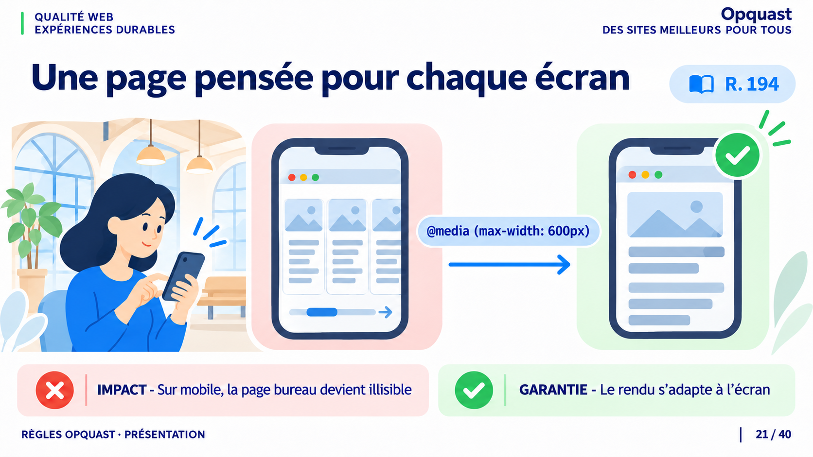
Nora consulte son téléphone dans un café. La vue de gauche montre trois colonnes miniaturisées dont la dernière déborde et une barre de défilement horizontal. Une flèche sous le code « @media (max-width: 600px) » mène vers un téléphone présentant une seule colonne et une coche. Le badge et deux encadrés complètent la comparaison.
Textes affichés dans l’image
- QUALITÉ WEB
- EXPÉRIENCES DURABLES
- Opquast
- DES SITES MEILLEURS POUR TOUS
- R. 194
- Une page pensée pour chaque écran
- @media (max-width: 600px)
- IMPACT - Sur mobile, la page bureau devient illisible
- GARANTIE - Le rendu s’adapte à l’écran
- RÈGLES OPQUAST · PRÉSENTATION
- 21 / 40
Règles Opquast de la slide
Un contenu, plusieurs écrans
- Chaque service en ligne devrait être consultable dans de bonnes conditions, quel que soit le terminal.
- Le livre cite deux familles de solutions : des styles adaptés à la taille de l’écran, par les media queries ou le design adaptatif, ou une version mobile dédiée.
- L’avis de l’expert pense prioritairement au responsive design, prévoit que les moyens évolueront, et juge la détection du navigateur la plus risquée.
Impact du non-respect
- Sur un téléphone, la page bureau se lit mal et oblige à défiler de côté.
Ce que garantit la règle
- Un mécanisme d’adaptation contribue à faciliter la consultation sur les terminaux mobiles.
Contrôle et limites
- Le contrôle compare le rendu sur plusieurs tailles d’écran, de l’ordinateur au smartphone en passant par la tablette.
Mémo oral
- Un contenu, des écrans.
Transition
- Zoom et adaptation se complètent ; aucun ne remplace l’autre.
Slide 22 - Zoom libre et page adaptée : il faut les deux
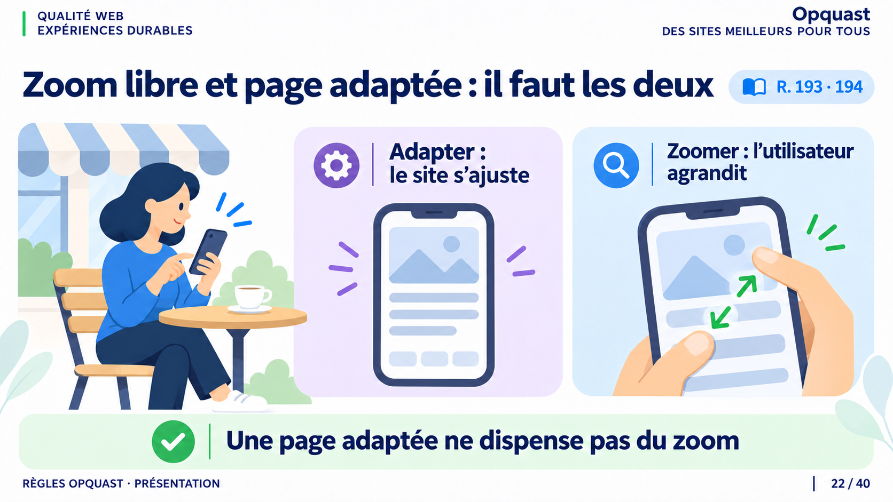
Nora consulte son téléphone à une table de café. Deux panneaux distinguent une page ajustée à l’écran, sous une roue dentée, et une page agrandie par deux doigts, sous une loupe. Le badge comporte deux règles et le bandeau vert rappelle qu’une page adaptée ne dispense pas du zoom.
Textes affichés dans l’image
- QUALITÉ WEB
- EXPÉRIENCES DURABLES
- Opquast
- DES SITES MEILLEURS POUR TOUS
- R. 193 · 194
- Zoom libre et page adaptée : il faut les deux
- Adapter : le site s’ajuste
- Zoomer : l’utilisateur agrandit
- Une page adaptée ne dispense pas du zoom
- RÈGLES OPQUAST · PRÉSENTATION
- 22 / 40
Règles Opquast de la slide
Deux acteurs différents
- L’adaptation, c’est le site qui s’ajuste à l’écran.
- Le zoom, c’est l’utilisateur qui agrandit selon ses besoins.
- Une page responsive qui bloque le zoom respecte la première règle et enfreint la seconde.
- L’avis de l’expert sur le zoom : mieux vaut admettre que l’affichage ne sera pas exactement celui prévu.
Contrôle et limites
- Ce rapprochement est pédagogique, pas une catégorie officielle ; l’adaptation se contrôle à plusieurs tailles d’écran, le zoom par le geste tactile.
Mémo oral
- Le site s’adapte, l’utilisateur agrandit.
Transition
- Sur un téléphone, toucher, agrandir et s’adapter échouent chacun à sa façon.
Slide 23 - Checkpoint 3 : sur le téléphone
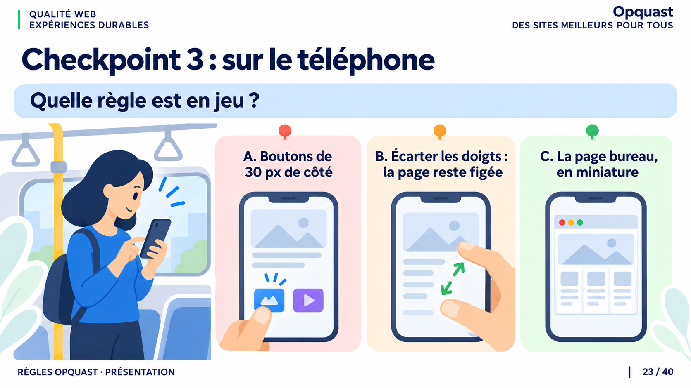
Nora consulte son téléphone dans un tram. Trois cartes A, B et C montrent un doigt sur deux petits boutons, deux doigts qui s’écartent sur une page, puis une page en trois colonnes miniaturisées dans un téléphone. Une question commune est placée au-dessus.
Textes affichés dans l’image
- QUALITÉ WEB
- EXPÉRIENCES DURABLES
- Opquast
- DES SITES MEILLEURS POUR TOUS
- Checkpoint 3 : sur le téléphone
- Quelle règle est en jeu ?
- A. Boutons de 30 px de côté
- B. Écarter les doigts : la page reste figée
- C. La page bureau, en miniature
- RÈGLES OPQUAST · PRÉSENTATION
- 23 / 40
Règles Opquast de la slide
Toucher, agrandir, s’adapter
- Chacun de ces gestes a sa règle.
- Le bon rattachement dépend de ce qui empêche l’utilisateur : la taille de la cible, le blocage du zoom ou l’absence d’adaptation.
Corrigé par l’objet des règles
- A concerne la taille des cibles : 30 pixels de côté sont inférieurs aux 44 par 44 demandés par défaut, et aux 48 par 48 pour Android.
- B concerne le zoom bloqué : l’adaptation au mobile peut exister et ne remplace pas la liberté d’agrandir.
- C concerne l’adaptation mobile absente : le zoom pourrait fonctionner sans que la page s’ajuste à l’écran.
Mémo oral
- Toucher, agrandir, adapter.
Transition
- Le texte lui-même a une forme : image, police, alignement, casse.
Slide 24 - Un programme en texte, pas en image
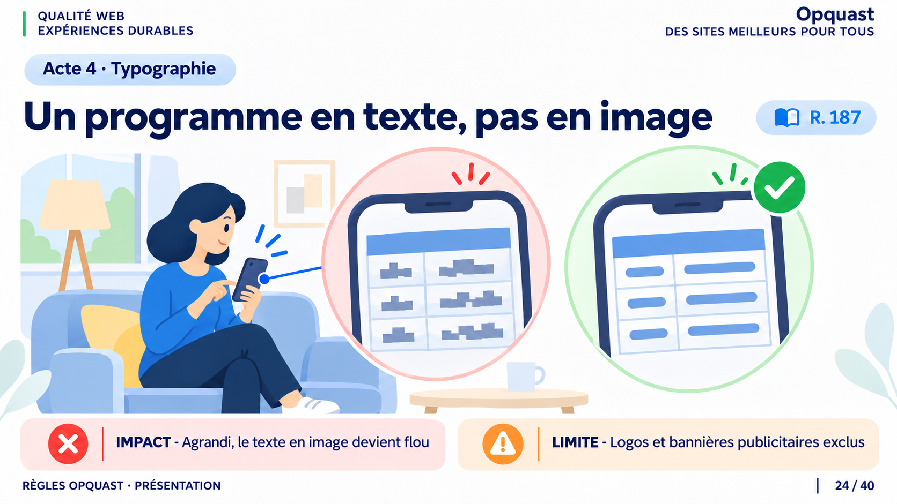
Assise sur un canapé, Nora consulte son téléphone. Deux médaillons agrandissent un tableau de deux colonnes et trois lignes : les formes du texte sont pixellisées dans celui de gauche et lisses dans celui de droite, qui porte une coche. Le cartouche d’acte et le badge précèdent la scène ; les encadrés signalent l’impact et l’exclusion des logos et bannières publicitaires.
Textes affichés dans l’image
- QUALITÉ WEB
- EXPÉRIENCES DURABLES
- Opquast
- DES SITES MEILLEURS POUR TOUS
- R. 187
- Acte 4 · Typographie
- Un programme en texte, pas en image
- IMPACT - Agrandi, le texte en image devient flou
- LIMITE - Logos et bannières publicitaires exclus
- RÈGLES OPQUAST · PRÉSENTATION
- 24 / 40
Règles Opquast de la slide
Un beau texte est possible sans image
- Une belle police est aujourd’hui possible sur le web : textes HTML, styles CSS, polices téléchargeables.
- La règle demande de ne pas remplacer par une image un texte que les styles pouvaient mettre en forme.
- Sont exclus les logos, les bannières publicitaires et les éléments graphiques de promotion.
- L’avis de l’expert demande du recul : remplacer quand c’est possible, pas à tout prix.
Impact du non-respect
- Agrandi, le texte en image se pixellise ; sa présentation ne s’adapte pas comme un texte HTML et sa restitution demande une alternative.
Ce que garantit la règle
- Conserver le texte éditorial en HTML permet d’en adapter la présentation, hors exceptions de logos et de promotion.
Contrôle et limites
- La revue examine les images HTML et les images d’arrière-plan CSS qui simulent un contenu éditorial ; le tableau de dates est du contenu éditorial et non une bannière promotionnelle.
Mémo oral
- Un texte se met en forme, pas en image.
Transition
- Quand le texte est du texte, encore faut-il qu’il s’affiche dans une police prévue.
Slide 25 - Une police de secours en fin de liste
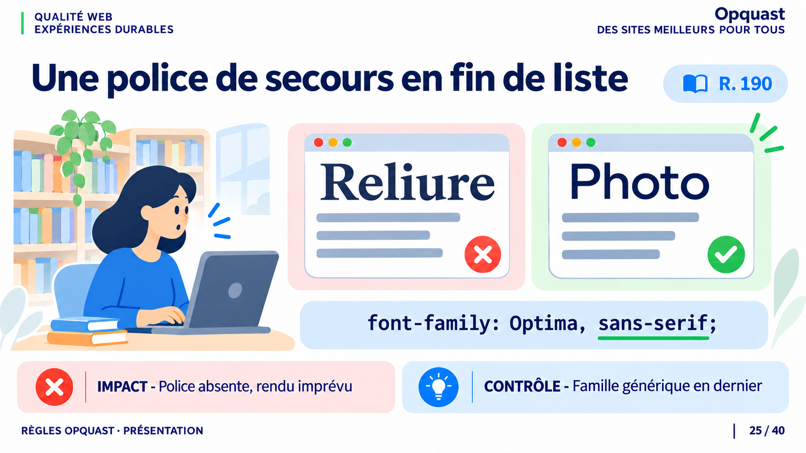
Nora se trouve devant un ordinateur dans une bibliothèque. Deux fenêtres opposent « Reliure », affiché dans une police de remplacement à empattements faute de la police prévue, avec une croix, à « Photo », sans empattements et avec une coche. Le code « font-family: Optima, sans-serif; » est au-dessous, avec « sans-serif » souligné en vert. Le badge et deux encadrés présentent l’impact et le contrôle.
Textes affichés dans l’image
- QUALITÉ WEB
- EXPÉRIENCES DURABLES
- Opquast
- DES SITES MEILLEURS POUR TOUS
- R. 190
- Une police de secours en fin de liste
- Reliure
- Photo
- font-family: Optima, sans-serif;
- IMPACT - Police absente, rendu imprévu
- CONTRÔLE - Famille générique en dernier
- RÈGLES OPQUAST · PRÉSENTATION
- 25 / 40
Règles Opquast de la slide
Prévoir le cas où la police manque
- Sur le poste de conception, tout va bien ; mais que se passe-t-il pour l’utilisateur qui n’a pas la police installée ?
- La règle demande d’indiquer en dernier élément de chaque liste de polices une famille générique :
serif,sans-serif,monospace,cursiveoufantasy. - Pour une police sans empattements, comme Optima dans l’exemple du livre, on termine par
sans-serif. - En pratique,
serifetsans-serifcouvrent l’essentiel ;monospacesert surtout au code.
Impact du non-respect
- Le navigateur choisit seul une police de remplacement, et l’affichage peut se dégrader.
Ce que garantit la règle
- Une famille générique pertinente permet de prévoir un rendu de substitution lorsque les polices nommées manquent.
Contrôle et limites
- Le contrôle porte sur chaque propriété font ou font-family, dans toutes les feuilles de styles et pour tous les médias, dont screen et print ; la famille générique doit être en dernier et pertinente.
- Le validateur CSS du W3C peut également signaler l’absence de famille générique.
Mémo oral
- Une famille générique en dernier.
Transition
- La police posée, reste l’alignement du texte.
Slide 26 - Pas de texte justifié par les styles
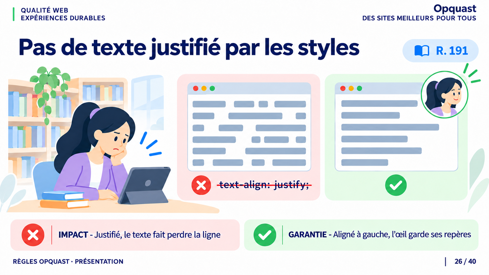
Inès, inquiète, lit sa tablette dans une bibliothèque. À gauche, une page présente des fragments de lignes espacés irrégulièrement entre deux bords alignés ; dessous, « text-align: justify; » est barré en corail près d’une croix. À droite, les lignes commencent au même endroit et finissent à des endroits différents ; une coche et un portrait souriant d’Inès accompagnent ce rendu. Le badge et deux encadrés complètent la scène.
Textes affichés dans l’image
- QUALITÉ WEB
- EXPÉRIENCES DURABLES
- Opquast
- DES SITES MEILLEURS POUR TOUS
- R. 191
- Pas de texte justifié par les styles
- text-align: justify;
- IMPACT - Justifié, le texte fait perdre la ligne
- GARANTIE - Aligné à gauche, l’œil garde ses repères
- RÈGLES OPQUAST · PRÉSENTATION
- 26 / 40
Règles Opquast de la slide
Des fins de lignes qui servent de repères
- La justification est souvent jolie, notamment sur papier ; selon le livre, plusieurs études ont montré qu’elle rend la lecture plus difficile pour de nombreux publics.
- L’avis de l’expert l’explique : un texte justifié fait perdre à l’œil les repères fournis par les fins de lignes irrégulières.
- La gêne est particulièrement forte pour les personnes dyslexiques.
- Le contrôle cherche
text-align: justifydans le CSS et l’attributalign="justify"dans le HTML.
Impact du non-respect
- Le lecteur perd sa ligne et relit ; certains renoncent.
Ce que garantit la règle
- L’absence de justification contribue à préserver des repères de lecture, notamment pour les personnes dyslexiques.
Contrôle et limites
- Le contrôle porte sur tout le code CSS et sur le HTML : aucune déclaration text-align: justify, ni tout autre équivalent, ni attribut align="justify" ne doit subsister.
Mémo oral
- Des fins de lignes libres pour garder ses repères.
Transition
- Après l’alignement, la casse : les capitales décoratives.
Slide 27 - Capitales : par les styles, pas au clavier
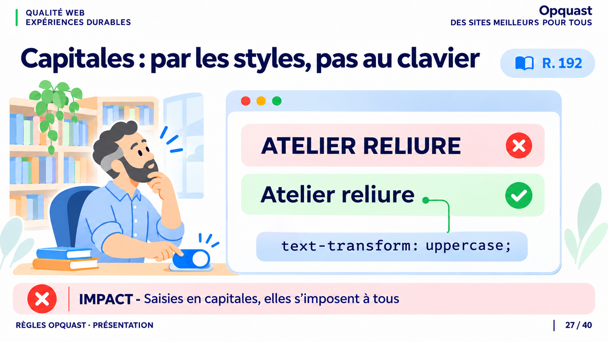
Samuel appuie sur un interrupteur. Dans une grande fenêtre, « ATELIER RELIURE » reste en capitales sur fond corail avec une croix ; « Atelier reliure » apparaît sur fond vert avec une coche. Une liaison part du second texte vers « text-transform: uppercase; ». Le badge est près du titre ; un seul encadré d’impact occupe le bas.
Textes affichés dans l’image
- QUALITÉ WEB
- EXPÉRIENCES DURABLES
- Opquast
- DES SITES MEILLEURS POUR TOUS
- R. 192
- Capitales : par les styles, pas au clavier
- ATELIER RELIURE
- Atelier reliure
- text-transform: uppercase;
- IMPACT - Saisies en capitales, elles s’imposent à tous
- RÈGLES OPQUAST · PRÉSENTATION
- 27 / 40
Règles Opquast de la slide
Écrire normalement, décorer par les styles
- Il est possible d’écrire un texte en minuscules et de l’afficher en capitales avec
text-transform: uppercase. - L’utilisateur reste alors libre d’adapter la mise en forme ; le livre vise aussi un copier-coller indépendant de la mise en majuscules.
- Le livre rappelle qu’un texte en majuscules se lit moins rapidement.
- Le contrôle passe par la désactivation des styles : ce qui reste en majuscules a été saisi ainsi.
- Les sigles et les noms d’auteurs d’une bibliographie restent des usages typographiques normaux.
Impact du non-respect
- La mise en capitales s’impose à tous, y compris à qui lit mal les textes tout en majuscules.
Ce que garantit la règle
- Les capitales décoratives gérées par les styles permettent d’adapter la mise en forme indépendamment de la saisie.
Contrôle et limites
- Le contrôle du livre désactive les styles et examine les capitales restantes selon les conventions de la langue.
- Le copier-coller indépendant des capitales est un objectif du livre ; son comportement selon les navigateurs n’est pas démontré ici.
Mémo oral
- On écrit normalement, les styles décorent.
Transition
- Image, styles, police : trois façons de perdre un texte, à bien distinguer.
Slide 28 - Image, style ou police : trois pertes
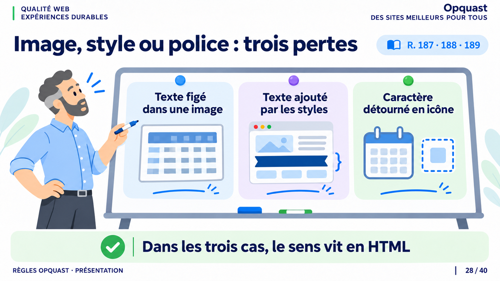
Samuel tient un feutre devant un tableau à trois cartes. De gauche à droite, elles montrent un tableau pixellisé, une page avec un ruban sans texte et une accolade, puis un calendrier à côté d’un caractère dans un carré pointillé. Chaque carte nomme son mécanisme ; le badge cite trois règles et le bandeau vert relie les trois au HTML.
Textes affichés dans l’image
- QUALITÉ WEB
- EXPÉRIENCES DURABLES
- Opquast
- DES SITES MEILLEURS POUR TOUS
- R. 187 · 188 · 189
- Image, style ou police : trois pertes
- Texte figé dans une image
- Texte ajouté par les styles
- Caractère détourné en icône
- Dans les trois cas, le sens vit en HTML
- RÈGLES OPQUAST · PRÉSENTATION
- 28 / 40
Règles Opquast de la slide
Trois mécanismes, trois remèdes
- Le texte figé dans une image se remplace par du texte stylé.
- Le texte écrit par la feuille de styles reçoit une alternative dans le HTML.
- Le caractère de police détourné en icône reçoit un libellé masqué dans le lien.
- Les trois règles se rejoignent sur un principe : le sens doit exister dans le HTML.
- Le mécanisme en cause désigne la règle.
Contrôle et limites
- Ce rapprochement est pédagogique, pas un regroupement officiel.
- Une image d’arrière-plan CSS qui simule du texte éditorial concerne l’image de texte ; si l’information manque par ailleurs au HTML, elle concerne aussi les contenus générés sans alternative.
- Le contrôle dépend du mécanisme : revue des images, examen des CSS avec désactivation des images d’arrière-plan, ou examen du code des icônes.
Mémo oral
- Image, style ou police : trouver le mécanisme.
Transition
- Chaque défaut typographique se loge à un endroit précis.
Slide 29 - Checkpoint 4 : typographie
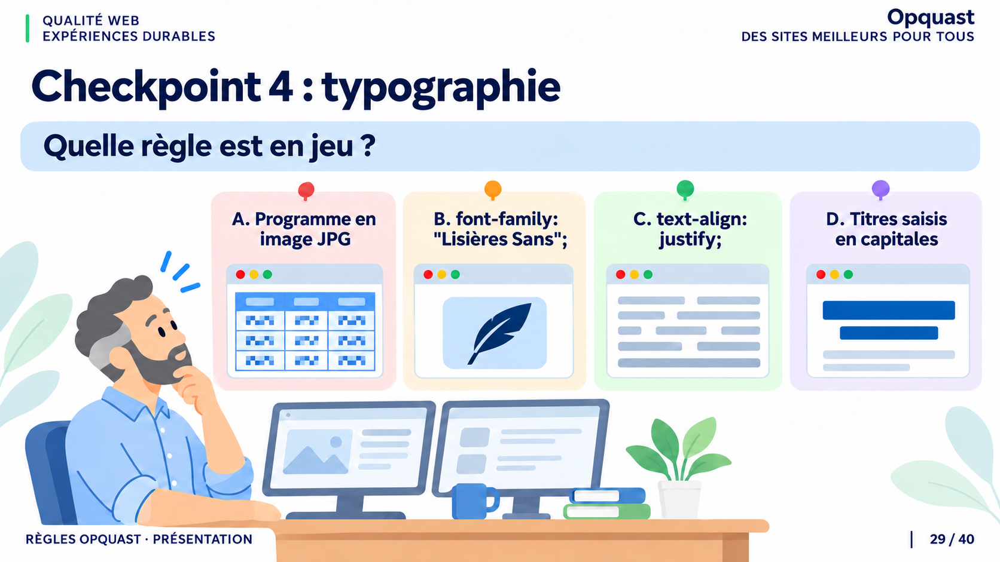
Samuel réfléchit devant deux écrans. Quatre cartes A à D sont alignées : un tableau pixellisé, une plume dessinée, un paragraphe aux espaces étirés et deux titres représentés par des bandes épaisses. Les constats B et C contiennent du code. La question est au-dessus.
Textes affichés dans l’image
- QUALITÉ WEB
- EXPÉRIENCES DURABLES
- Opquast
- DES SITES MEILLEURS POUR TOUS
- Checkpoint 4 : typographie
- Quelle règle est en jeu ?
- A. Programme en image JPG
- B. font-family: "Lisières Sans";
- C. text-align: justify;
- D. Titres saisis en capitales
- RÈGLES OPQUAST · PRÉSENTATION
- 29 / 40
Règles Opquast de la slide
Où se trouve le défaut ?
- Dans une image, dans une déclaration de police, dans l’alignement ou dans la saisie du texte.
- Chaque emplacement correspond à une règle.
Corrigé par l’objet des règles
- A concerne l’image de texte : le programme éditorial pourrait être mis en forme par les styles, il ne s’agit pas seulement d’un contenu généré en CSS.
- B concerne la famille générique de secours : la police fictive est seule dans la déclaration et aucun dernier recours générique n’est indiqué.
- C concerne la justification du texte, et non la mise en majuscules décorative.
- D concerne les capitales décoratives saisies dans le contenu, qui devraient relever des styles, et non une image de texte.
Mémo oral
- Image, police, alignement, casse.
Transition
- Et quand la page passe au papier ?
Slide 30 - Prévoir la page sur papier
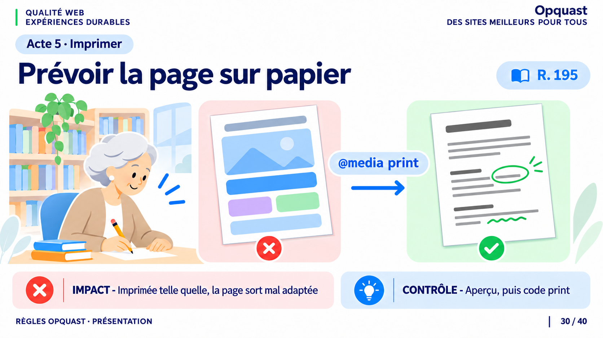
Odette écrit au crayon à une table de bibliothèque. À côté, une feuille chargée d’images et d’aplats colorés avec une croix est reliée par une flèche à une feuille sobre de lignes grises, entourée et soulignée en vert, avec une coche. Le code « @media print » est au-dessus de la flèche. Le cartouche d’acte, le badge et deux encadrés complètent la scène.
Textes affichés dans l’image
- QUALITÉ WEB
- EXPÉRIENCES DURABLES
- Opquast
- DES SITES MEILLEURS POUR TOUS
- R. 195
- Acte 5 · Imprimer
- Prévoir la page sur papier
- @media print
- IMPACT - Imprimée telle quelle, la page sort mal adaptée
- CONTRÔLE - Aperçu, puis code print
- RÈGLES OPQUAST · PRÉSENTATION
- 30 / 40
Règles Opquast de la slide
Prévoir le passage au papier
- Il est possible de prévoir comment le contenu d’une page doit s’imprimer : c’est le rôle des feuilles de styles pour le média print.
- L’avis de l’expert en cite des usages : adapter la typographie au papier, ne garder que le contenu propre de la page, afficher l’adresse de chaque lien.
- Une feuille d’impression dispense de publier une version HTML spécifique pour l’impression.
- L’aperçu avant impression donne une première idée ; la confirmation passe par le code.
Impact du non-respect
- La feuille sort comme une copie d’écran : aplats de couleur, éléments d’interface, typographie peu adaptée au papier.
Ce que garantit la règle
- Les styles d’impression visent à proposer une forme appropriée au papier ; leur présence se confirme au code et leur rendu s’examine à l’aperçu.
Contrôle et limites
- Un aperçu propre ne suffit pas à prouver les styles d’impression : il faut examiner le code.
- Le code peut utiliser link ou style avec media="print", une règle @media print ou un import limité au média print.
Mémo oral
- L’écran et le papier ont chacun leurs styles.
Transition
- Le premier usage attendu de ces styles : retirer la navigation.
Slide 31 - Sur papier, les menus ne servent à rien
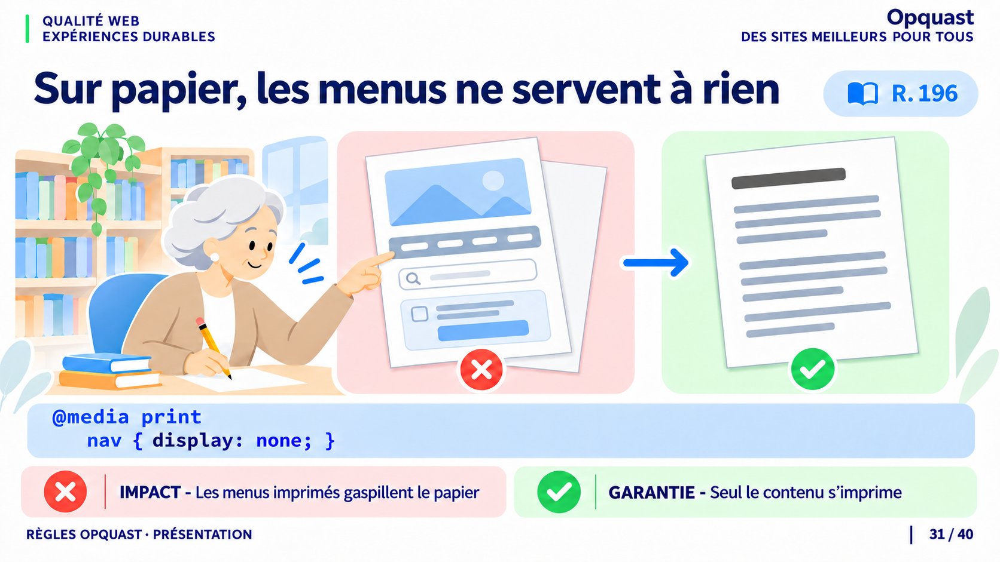
Odette pointe les menus d’une impression de deux feuilles. La première contient une image, un menu, une recherche et un formulaire, avec une croix. Une flèche mène vers une seule feuille de lignes, sans ces blocs, avec une coche. Un bandeau de code affiche deux lignes : « @media print » puis « nav { display: none; } ». Le badge et deux encadrés accompagnent la comparaison.
Textes affichés dans l’image
- QUALITÉ WEB
- EXPÉRIENCES DURABLES
- Opquast
- DES SITES MEILLEURS POUR TOUS
- R. 196
- Sur papier, les menus ne servent à rien
- @media print
- nav { display: none; }
- IMPACT - Les menus imprimés gaspillent le papier
- GARANTIE - Seul le contenu s’imprime
- RÈGLES OPQUAST · PRÉSENTATION
- 31 / 40
Règles Opquast de la slide
La navigation n’a de sens qu’à l’écran
- Sur papier, toucher un menu ne déclenche rien : le livre en fait l’expérience avec une feuille A4.
- Formulaire de recherche, liens annexes, inscription à la newsletter : tous ces blocs de navigation sont inutiles à l’impression.
- La solution du livre : une feuille de styles print qui les masque par la propriété
display. - Le contrôle est immédiat : l’aperçu avant impression.
Impact du non-respect
- Des feuilles encombrées, moins lisibles, et du papier gaspillé.
Ce que garantit la règle
- Masquer les blocs de navigation contribue à une impression plus lisible et économe en papier.
Contrôle et limites
- L’aperçu doit exclure les menus et les autres blocs de navigation, dont la recherche, les liens annexes et l’inscription à une newsletter.
Mémo oral
- Sur papier, seulement le contenu.
Transition
- Les deux règles d’impression se vérifient de deux façons différentes.
Slide 32 - Impression : deux contrôles
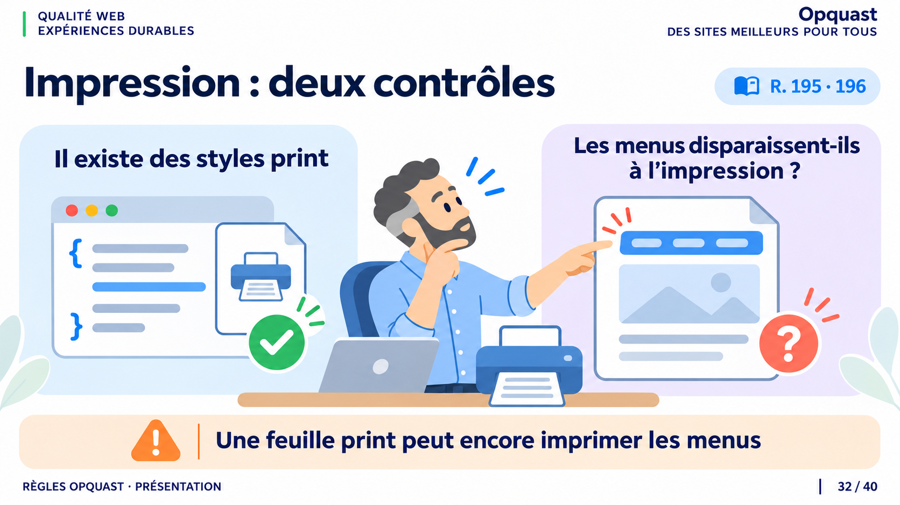
Samuel pointe le menu d’une feuille imprimée. Dans le panneau gauche, du code entre accolades et une feuille à icône d’imprimante sont accompagnés d’une coche. Dans le panneau droit, un point d’interrogation corail accompagne la feuille dont le menu est encore présent. Le badge cite deux règles ; le bandeau orange avertit qu’une feuille print peut encore imprimer les menus.
Textes affichés dans l’image
- QUALITÉ WEB
- EXPÉRIENCES DURABLES
- Opquast
- DES SITES MEILLEURS POUR TOUS
- R. 195 · 196
- Impression : deux contrôles
- Il existe des styles print
- Les menus disparaissent-ils à l’impression ?
- Une feuille print peut encore imprimer les menus
- RÈGLES OPQUAST · PRÉSENTATION
- 32 / 40
Règles Opquast de la slide
Le code d’un côté, l’aperçu de l’autre
- Une feuille de styles print existe : la règle sur les styles d’impression est respectée, le code le montre.
- L’aperçu montre pourtant le menu : la règle sur l’impression sans navigation ne l’est pas.
- Une même feuille print peut satisfaire l’une et manquer l’autre.
Contrôle et limites
- Ce rapprochement est pédagogique, pas une catégorie officielle ; l’absence de styles print se constate au code, celle des blocs de navigation à l’aperçu.
Mémo oral
- Le code pour les styles, l’aperçu pour les menus.
Transition
- Ces défauts ne s’arrêtent pas aux frontières de la rubrique.
Slide 33 - D’autres rubriques en écho
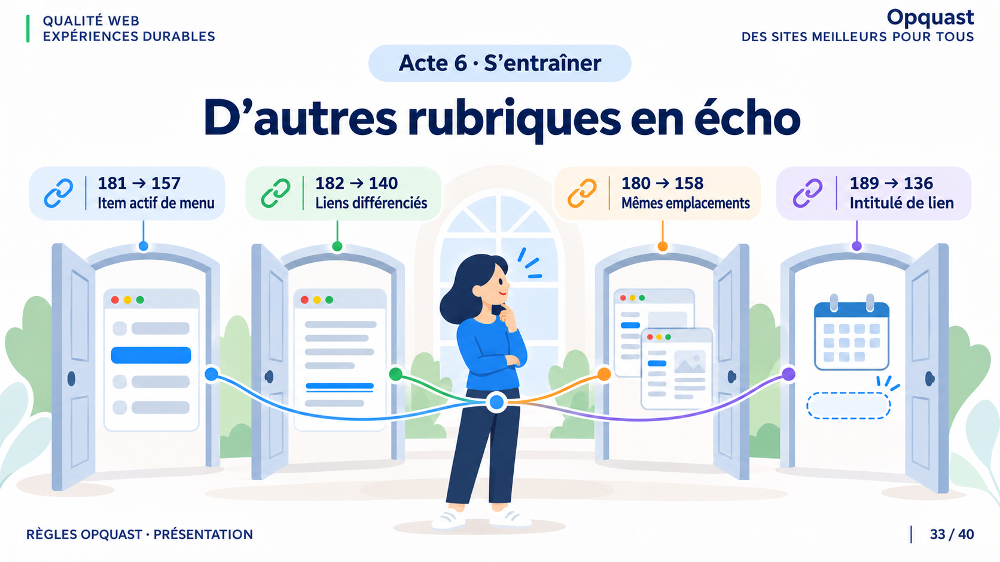
Nora se tient entre quatre portes ouvertes, reliées à elle par des lignes colorées. Chaque porte porte une correspondance chiffrée et un objet : un item actif de menu, des liens différenciés, des menus aux mêmes emplacements et un intitulé de lien. Les illustrations montrent une liste avec un item bleu, un lien souligné, deux fenêtres à menus semblables et un calendrier au-dessus d’une zone pointillée. Le cartouche de l’acte est au-dessus du titre.
Textes affichés dans l’image
- QUALITÉ WEB
- EXPÉRIENCES DURABLES
- Opquast
- DES SITES MEILLEURS POUR TOUS
- Acte 6 · S’entraîner
- D’autres rubriques en écho
- 181 → 157 Item actif de menu
- 182 → 140 Liens différenciés
- 180 → 158 Mêmes emplacements
- 189 → 136 Intitulé de lien
- RÈGLES OPQUAST · PRÉSENTATION
- 33 / 40
Règles Opquast de la slide
Des passages du livre qui ouvrent sur d’autres rubriques
- La règle sur la couleur cite le menu où la rubrique en cours ne se distingue que par sa couleur : la rubrique Navigation demande de signaler les items actifs de menu.
- L’avis de l’expert sur le contraste évoque les liens non soulignés : la rubrique Liens demande de les différencier visuellement du contenu.
- Le contrôle de la charte graphique regarde l’emplacement des menus : en Navigation, les blocs de même nature restent aux mêmes emplacements.
- Le libellé masqué d’une icône de police rejoint la règle qui demande un intitulé à chaque lien.
- Le formulaire sans styles rejoint, en Formulaires, l’association de chaque champ à son étiquette dans le code.
- Ces rapprochements sont pédagogiques : un défaut n’enfreint pas automatiquement les deux règles.
Mémo oral
- Un constat, parfois plusieurs rubriques.
Transition
- Un constat précis désigne une règle précise.
Slide 34 - Évaluation 1/2
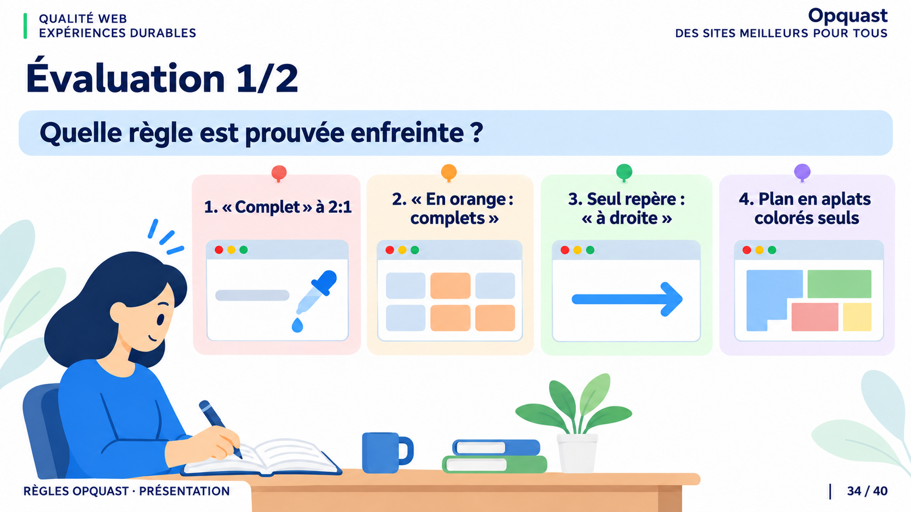
Nora prend des notes dans un carnet. Quatre cartes numérotées de 1 à 4 sont placées sous une question commune. Elles montrent une pipette devant une ligne pâle, des cases dont certaines sont orange, une flèche vers la droite, puis un plan en aplats colorés. Chaque carte porte son constat.
Textes affichés dans l’image
- QUALITÉ WEB
- EXPÉRIENCES DURABLES
- Opquast
- DES SITES MEILLEURS POUR TOUS
- Évaluation 1/2
- Quelle règle est prouvée enfreinte ?
- 1. « Complet » à 2:1
- 2. « En orange : complets »
- 3. Seul repère : « à droite »
- 4. Plan en aplats colorés seuls
- RÈGLES OPQUAST · PRÉSENTATION
- 34 / 40
Règles Opquast de la slide
Ce qui est perdu désigne la règle
- Un texte dont le ratio mesuré est sous le seuil relève du contraste.
- Une information portée par la seule couleur relève de la couleur seule, même quand la couleur est nommée dans le texte.
- Une désignation dont la position est le seul repère relève de la forme et de la position.
Corrigé par l’objet des règles
- Pour le premier constat, le contraste de 2 pour 1 est inférieur au seuil de 3 pour 1 du livre ; le mot est présent et aucune information n’est codée par la couleur.
- Pour le deuxième, la couleur seule désigne les ateliers complets, même si le mot orange est écrit ; la forme et la position ne sont pas en cause.
- Pour le troisième, la position seule sert de repère, ce qui appelle un nom, un identifiant ou un lien en complément.
- Pour le quatrième, la couleur seule distingue les zones du plan ; le contraste des aplats ne répond pas à la perte de sens.
Mémo oral
- Ce qui est perdu désigne la règle.
Transition
- La même exigence de preuve vaut pour le téléphone et l’impression.
Slide 35 - Évaluation 2/2
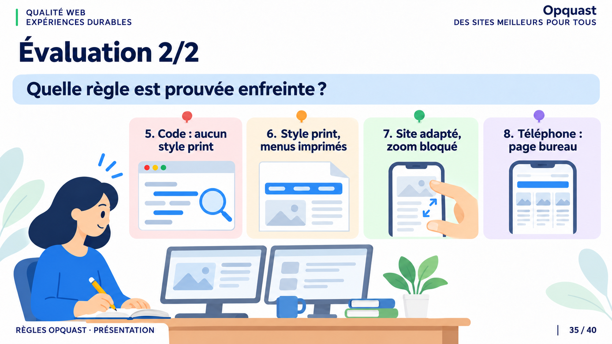
Nora écrit dans un carnet devant deux écrans. Quatre cartes numérotées de 5 à 8 montrent du code examiné à la loupe, une feuille imprimée avec son menu, un téléphone sous un geste d’agrandissement et une page en trois colonnes dans un téléphone. Les constats et la question sont affichés.
Textes affichés dans l’image
- QUALITÉ WEB
- EXPÉRIENCES DURABLES
- Opquast
- DES SITES MEILLEURS POUR TOUS
- Évaluation 2/2
- Quelle règle est prouvée enfreinte ?
- 5. Code : aucun style print
- 6. Style print, menus imprimés
- 7. Site adapté, zoom bloqué
- 8. Téléphone : page bureau
- RÈGLES OPQUAST · PRÉSENTATION
- 35 / 40
Règles Opquast de la slide
Un constat ne prouve que ce qu’il observe
- Un constat au code renseigne sur la présence de styles d’impression, pas sur ce que montre l’aperçu.
- Un aperçu qui imprime les menus prouve un défaut même quand une feuille print existe.
- Un zoom bloqué reste un défaut sur un site adapté ; une page bureau sur téléphone signale l’absence d’adaptation.
Corrigé par l’objet des règles
- Pour le cinquième constat, l’absence de styles d’impression est établie au code ; sans aperçu, rien n’est prouvé sur la présence des menus imprimés.
- Pour le sixième, c’est l’impression sans navigation qui échoue, alors que des styles d’impression existent.
- Pour le septième, le zoom est bloqué malgré une adaptation mobile présente.
- Pour le huitième, l’adaptation mobile manque ; rien n’indique que le zoom soit bloqué.
Mémo oral
- Un constat ne prouve que ce qu’il observe.
Transition
- Toutes ces règles se retrouvent dans une même page.
Slide 36 - Grand cas : trouvez sept défauts
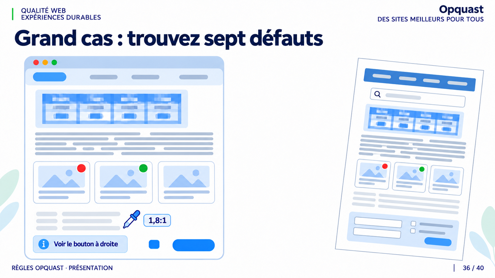
À gauche, une fenêtre de navigateur contient un menu, un tableau aux caractères pixellisés, un paragraphe de lignes aux espaces irréguliers, puis trois cartes illustrées dont deux portent une pastille rouge ou verte. Plus bas figurent des lignes très pâles, une pipette avec « 1,8:1 », une aide « Voir le bouton à droite » et deux boutons bleus de tailles différentes. À droite, une feuille inclinée reprend un menu, une recherche, le tableau, des lignes, les trois cartes et un formulaire.
Textes affichés dans l’image
- QUALITÉ WEB
- EXPÉRIENCES DURABLES
- Opquast
- DES SITES MEILLEURS POUR TOUS
- Grand cas : trouvez sept défauts
- Voir le bouton à droite
- 1,8:1
- RÈGLES OPQUAST · PRÉSENTATION
- 36 / 40
Une page et son impression
- La page Programme de la Maison des Lisières réunit des défauts de présentation de toute la rubrique.
- Une page se juge aussi sur papier : sa version imprimée porte ses propres défauts.
- Une mesure figure déjà sur la page : le ratio relevé sur les horaires.
- Seul compte ce qui s’observe ; ce qui demande le code ou un autre appareil ne se juge pas à l’œil.
Contrôle et limites
- La famille générique de police, le zoom et l’adaptation mobile ne peuvent pas être jugés à partir de cette scène.
Mémo oral
- Auditer ce que l’on voit, rien de plus.
Transition
- Chaque défaut observé désigne une règle.
Slide 37 - Correction
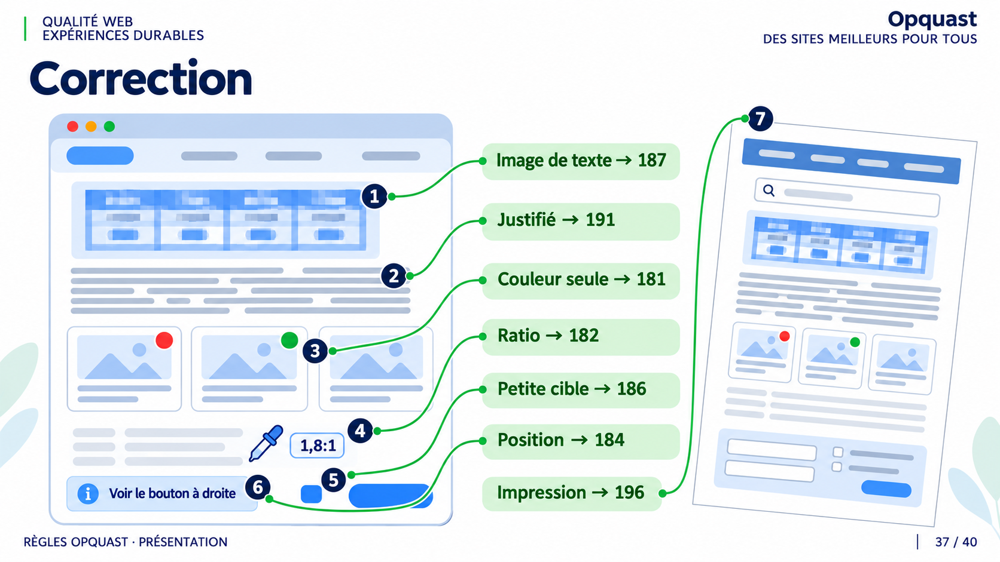
La page de navigateur et son impression reprennent le grand cas. Sept pastilles bleu marine numérotées et des traits verts relient les zones à une colonne d’étiquettes. Le repère 1 vise le tableau pixellisé, associé à « Image de texte → 187 » ; le 2, le paragraphe justifié, à « Justifié → 191 » ; le 3, les pastilles colorées, à « Couleur seule → 181 » ; le 4, les lignes pâles et leur mesure « 1,8:1 », à « Ratio → 182 » ; le 5, le petit bouton, à « Petite cible → 186 » ; le 6, l’aide « Voir le bouton à droite », à « Position → 184 » ; le 7, le menu de la feuille imprimée, à « Impression → 196 ».
Textes affichés dans l’image
- QUALITÉ WEB
- EXPÉRIENCES DURABLES
- Opquast
- DES SITES MEILLEURS POUR TOUS
- Correction
- Voir le bouton à droite
- 1,8:1
- 1
- 2
- 3
- 4
- 5
- 6
- 7
- Image de texte → 187
- Justifié → 191
- Couleur seule → 181
- Ratio → 182
- Petite cible → 186
- Position → 184
- Impression → 196
- RÈGLES OPQUAST · PRÉSENTATION
- 37 / 40
Règles Opquast de la slide
Sept défauts, sept règles
- Le tableau des dates est une image de texte : un contenu éditorial qui devait rester du texte stylé.
- Le paragraphe est justifié par les styles.
- Seule une pastille rouge signale l’atelier complet : la couleur porte seule l’information.
- Sur les horaires gris pâle, le ratio mesuré, 1,8 pour 1, est sous le seuil.
- Le bouton d’inscription est trop petit pour un doigt.
- L’aide désigne un bouton par sa position.
- L’impression emporte le menu, la recherche et le formulaire.
Ce que l’observation ne permet pas de juger
- La police de secours, le zoom, l’adaptation mobile, les contenus générés ou masqués demandent le code ou un autre appareil.
Contrôle et limites
- La famille générique de police, le zoom, l’adaptation mobile et les contenus générés ou masqués demandent d’autres contrôles que cette image.
Mémo oral
- Corriger, rattacher, ne pas conclure sans voir.
Transition
- Derrière ces réponses, cinq distinctions reviennent sans cesse.
Slide 38 - Cinq distinctions à retenir
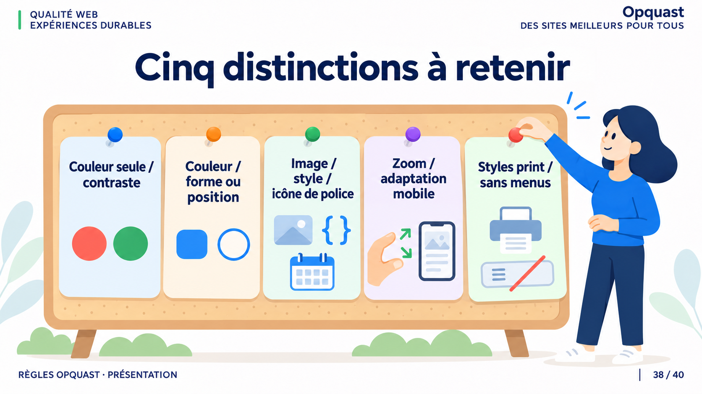
Nora épingle la dernière de cinq cartes sur un tableau de liège. De gauche à droite, les cartes associent leurs distinctions à deux disques colorés, un carré et un cercle, une image avec des accolades et un calendrier, une main devant un téléphone, puis une imprimante au-dessus d’un menu barré. Les termes sont séparés par des barres obliques.
Textes affichés dans l’image
- QUALITÉ WEB
- EXPÉRIENCES DURABLES
- Opquast
- DES SITES MEILLEURS POUR TOUS
- Cinq distinctions à retenir
- Couleur seule / contraste
- Couleur / forme ou position
- Image / style / icône de police
- Zoom / adaptation mobile
- Styles print / sans menus
- RÈGLES OPQUAST · PRÉSENTATION
- 38 / 40
Cinq confusions fréquentes
- Couleur seule ou contraste : le sens porté par la couleur, ou la lisibilité du texte.
- Couleur ou forme et position : quel repère visuel désigne le contenu.
- Image de texte, contenu généré ou icône de police : quel mécanisme fait perdre le texte.
- Zoom ou adaptation mobile : le geste de l’utilisateur, ou le travail du site.
- Styles d’impression ou impression sans menus : le code, ou l’aperçu.
Contrôle et limites
- Ces cinq distinctions sont un mémo pédagogique, pas une classification officielle de la checklist.
Mémo oral
- Une distinction, un contrôle.
Transition
- Une dernière question résume toute la rubrique.
Slide 39 - Dernière question : ma page sert-elle chacun ?
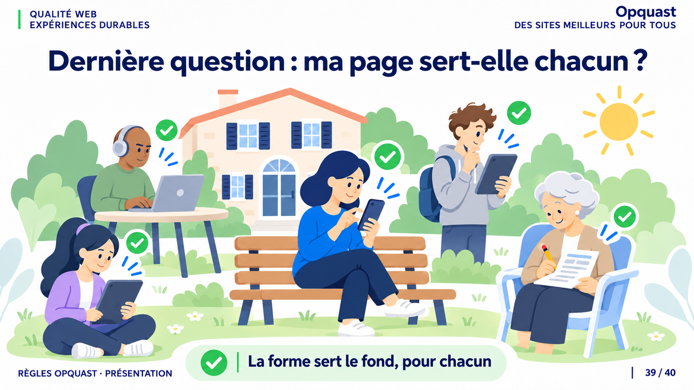
Devant la Maison des Lisières et sous le soleil, Nora est assise sur le banc avec son téléphone. Malik utilise son ordinateur avec un casque à une table ; Théo consulte sa tablette debout ; Inès lit sur une tablette, assise dans l’herbe ; Odette annote une feuille dans un fauteuil de jardin. Une petite coche verte accompagne chacun. Un bandeau vert porte le slogan sous les cinq scènes.
Textes affichés dans l’image
- QUALITÉ WEB
- EXPÉRIENCES DURABLES
- Opquast
- DES SITES MEILLEURS POUR TOUS
- Dernière question : ma page sert-elle chacun ?
- La forme sert le fond, pour chacun
- RÈGLES OPQUAST · PRÉSENTATION
- 39 / 40
La même page pour chacun
- Nora lit au soleil, Théo repère les champs obligatoires, Malik entend le nom de chaque bouton.
- Inès suit un texte aligné à gauche, Odette annote une feuille limitée au contenu.
- C’est la même page, dont la présentation sert le contenu au lieu de le retenir.
- Toute la rubrique tient dans une question à poser à chaque maquette et à chaque intégration : cette page sert-elle chacun ?
Mémo oral
- Ma page sert-elle chacun ?
Conclusion
- La forme sert le fond, pour chacun.
Slide 40 - Pour aller plus loin
Nora prend des notes dans un livre ouvert à une table de bibliothèque. Trois cartes montrent une liste cochée, un livre ouvert et un livre fermé ; elles donnent les ressources et sont reliées à un ordinateur affichant des coches. Les noms de domaines sont inscrits sur les deux premières cartes et le titre du livre sur la troisième.
Textes affichés dans l’image
- QUALITÉ WEB
- EXPÉRIENCES DURABLES
- Opquast
- DES SITES MEILLEURS POUR TOUS
- Pour aller plus loin
- Checklist Opquast V5 : checklists.opquast.com
- Glossaire : training.opquast.com
- Livre : Qualité et conformité des services numériques
- RÈGLES OPQUAST · PRÉSENTATION
- 40 / 40
Trois sources officielles
- La checklist Opquast V5 et ses fiches donnent les libellés, objectifs et contrôles de chaque règle.
- Le glossaire de la thématique Présentation précise le vocabulaire.
- Le livre Qualité et conformité des services numériques, quatrième édition, développe chaque règle avec l’avis de l’expert.
Retrouver les ressources
- La checklist officielle Opquast V5 donne accès aux fiches.
- Le glossaire Opquast accompagne les révisions.
- La présentation officielle du livre permet de retrouver l’ouvrage.
Mémo oral
- Revenir aux sources.
Conclusion
- Les libellés officiels restent la référence pour réviser.